The Charvel and Jackson Portal (Under Construction)
How to use this guide: The purpose of this database is to help you easily identify any Charvel or Jackson model based on its specifications and image if attached. I can only document what I know or find, and this is an ONGOING project. Expect frequent changes on this and any of the sub-pages. **NEW** NOTE: The thumbnails open into bigger images. At least most of the time. The hyperlink leads to the same photo. Both will usually open in new tab.
-Main Jackson Database #1-
- Jackson Rhoads
- Jackson Soloist
- Jackson Dinky
- Jackson King V
- Jackson Kelly guitar and bass
- Jackson Warrior
- Concert Bass
Click here for Database #2: Additional newer, rarer, and/or more obscure Jacksons
Click here for Database #3: Grover Jackson, Team GJ, MyG. and related
Click here for Database #4 Jackson Stars USA, MJ
CLICK FOR CHARVELS
***More information on Jacksons and Charvels, how to decipher model names, list of non-guitar Charvel and Jackson products, reference materials, and links***
Note: If you don't see something here, please check the above pages!!!
The generalish format is like so:
Model name:
Body construction (plus top if any):
Neck construction (omitted in some circumstances, see below):
Fretboard (woods, binding if any, # frets, scale length):
Country(s) of manufacture:
Year(s):
Electronics (pickups, and additional):
Bridge (type):
Controls (knobs, switches, toggles):
Hardware color:
Finishes (and if headstock matches):
*sometimes* neck specs:
Other: (notes, etc)
Exceptions: I try to make this easy to look at without redundancy. If all Soloists for example are neck-thru, I will not mention such on every entry. Or if Dinkies by default are 24 frets, I may not note so unless a particular Dinky has 22 frets. If model is exactly like another but a small spec change (like a hardtail and tremolo version of the same model) I will note the difference but might not repeat the rest. We avoid very hard to track information, like MSRP or what cases the guitars came with unless I get explicit info from somewhere. Some dates are inexact, especially regarding spec changes, limited editions, or store exclusives.
Personal Collection, WIP spreadsheets, and alternate site: See here
Jackson Rhoads
The famous guitar ‘Jackson’ was made for essentially, a collaboration between Randy Rhoads and Grover Jackson. This database is meant to document production models rather than custom shop guitars and prototypes but let’s touch on it a bit. The Rhoads is an asymmetrical Flying V shaped guitar which Randy nicknamed ‘Concorde’ after the aircraft. There are a few prototypes but they all look close to production models aside from the vintage style tremolo. I will cover the normal models here also some special ones like the Roswell Rhoads. (The Roswell 'Star' is Custom Shop also). Unless noted, these are neck-thru with 22 frets and a 1 vol/1 tone/three-way toggle.
USA
- Jackson Rhoads (80s Custom shop): Not to be confused with the RR1, this is the Rhoads displayed in 80s catalogs. It’s neck-thru and features narrower fret wire. Body is poplar with other woods as options. Beveled body design and Jackson JT-6 tremolo. ‘Custom’ models feature Ebony fretboards with binding, ‘Student’ rosewood with pearl dots. One, two, or three pickup options available.
- Jackson Rhoads Custom (USA): Predecessor to the the RR1 from 1990-96. Poplar body, bound ebony fretboard with pearl sharkfin and logo. J-50B and J-50N pickups with JE-1200 active mid-boost. Later L-500/ L-500XL pickups. Three way toggle on the metal plate and side mount output jack. Finishes: lightning sky, California sunset, Bikini beach, snakeskin, bolted steel, warbird, don’t smoke, deco dream, Saturn, Jigsaw, metallic black, eerie dess swirl, candy red, pearl white, midnight black, pearl yellow, Ferrari red, snow white, fire crackle, tie die, metallic electric blue. Later: Lightning sky, skulls, standing woman, coral sea, black and white dragon, flames, multi colored dragon, turquoise stone, errie dess, sunset, spheres, textured red pearl, snakeskin, reclining woman, holo flake, electric blue, red & blue swirl, black
- Jackson Original Rhoads: Early 90s 'Player's Choice'. A TOM USA Rhoads as a throwback to a prototype. Poplar body, bound ebony fretboard with pearl shark fins, JT-390 string-thru body bridge, Seymour Duncan SH-4 JB/ SH-6 Distortion HH pickups. Brass hardware and unique Jackson logo. Matching headstock logo and gold hardware. Note: There is a Grover Jackson version of this. See Grover Jackson section. Finishes: black
- Jackson Rhoads 10 String: Early 90s ‘Signature Series/ Player's Choice’ to the specs of Dan Spitz of Anthrax. Quilted maple wings, bound ebony fretboard with reverse pearl sharkfin inlays, a special bridge, Seymour Duncan SH-4 JB/ SH-6 Distortion HH pickups. Finishes: black (trans)
- Jackson Rhoads RR1: USA flagship Rhoads, sometimes labeled ‘USA Select’. Poplar body from 1996-98 and Alder from then on. Neck-thru with bound ebony fretboard and pearl sharkfin inlay. Seymour Duncan TB-4/SH-2 HH pickups and Org. 22 frets. Floyd Rose. 1 Vol, 2 tone and three-way toggle. Black or chrome hardware. Finishes (varying by year): black, snow white, black w/ gold pinstripes, snow white with black bevels, snow white with black pinstripes, black ghost flames, lightning sky, metallic black, gun metal gray, deep candy red, cobalt blue, eerie dess, skulls, pile o skulls, graveyard, shattered glass, nebula, snakeskin, bolted steel, yellow Bengal, burst cherry sunburst, natural, trans black, trans blue, trans green, trans red, blue and orange flames, Bengal, and more..
- Jackson Rhoads RR1T: String-thru body bridge option. Finishes: black, blue ghost flames, lightning sky, USA graphic finishes, trans finishes, solid/metallic finishes, candy/pearl finishes, bevel/pinstripe finishes 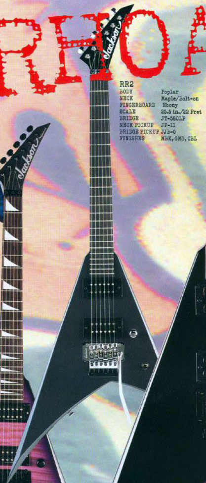
- Jackson Rhoads RR2: USA made bolt on Rhoads. Poplar body, maple neck with ebony fretboard (no markers), JT-580LP tremolo, and JP-11/JJB-0 HH pickups. One volume and three-way toggle. Finishes: black, gun metal gray, cobalt blue
- Jackson Rhoads XTRR: USA Rhoads with reverse headstock. 2001-02. Alder body, neck-thru maple neck, ebony bound fretboard with reverse pearl sharkfin inlay, Seymour Duncan SH-8/SH-10 HH pickups. One volume and three-way toggle. Black hardware. Finishes: Blue Green Pearl, Black, Black Pearl, Electric Blue, Ferrari Red, Gun Metal gray, Metallic Black, Pavo Purple, Sea Foam Green, Black with White Bevels, Lightning Sky
- USA Jackson Randy Rhoads RR5*: From 2003 catalog. String thru body RR1 it appears. Seems to be a rosewood fretboard, no binding. Color matching headstock. Seymour Duncan HH setup. Gold hardware and ivory with black bevels.
- Jackson USA Rhoads RR24R*: A USA RR24 (finally..) Alder body, maple neck. Bound Ebony fretboard with MOP reverse sharkfin inlays. 24 frets, neck-thru. Reverse headstock. Seymour Duncan Distortion HH pickups. Org. Floyd Rose tremolo. Vol, vol, tone, three-way toggle. Black hardware. (Known) Finishes: Black with white pinstripes Note: Might be Musician's Friend Exclusive?
- Jackson Roswell Rhoads LTD.: A very special piece first displayed at ’96 NAMM. Striking shape. Aluminum chambered body, maple neck-bolted on with black binding, aluminum headstock. Ebony fretboard with crop-circle inlays. 12" radius. 22 frets. LSR tuners. Chrome hardware. Tom Holmes humbucker with tune-o-matic bridge, string through body. 123 made.
- Jackson Rhoads RR5FR 30th Anniversary (USA): USA custom shop special edition Rhoads limited to 30. Master built by Mike Shannon. (May relate to entry below) Poplar body, maple neck (neck-thru) with bound rosewood fretboard and pearl (smaller) sharkfin inlays. 22 frets (small). Seymour Duncan HH pickups. Vintage style tremolo. Vol, vol, tone, three-way toggle. Gold hardware. Finishes: Black. Included custom case.
- Jackson Rhoads 30th Anniversary "First Five": Limited from 2010 master built by Mike Shannon. Poplar body, maple neck (neck-thru). Rosewood fretboard with pearl reverse sharkfin inlays. 22 frets. Ivoriod binding. Seymour Duncan zebra HH pickups. Floyd Rose tremolo. Crown head tuners. Vol, three-way toggle. Chrome hardware. Finishes: Gold metal flake.
Pro Series:
- Roswell Rhoads: Wood body (MIJ) production one. Poplar Body. Maple bolt-on neck with Rosewood fretboard and crop circle inlays. 22 frets. Tune-o-matic bridge string-thru body, and DD103B bridge H pickup.
- Jackson Rhoads RR3: An initially MIJ ‘Professional’ Series Rhoads that outlived its contemporaries by over a decade and became a modern ‘Pro’ Series. (See entry under 'Professional' for old appearance) Early specs: Poplar body with optional Gravure top, later alder body. Maple bolt on neck with rosewood fretboard and pearl sharkfin inlays. Duncan Design DD103N/DD103B HH pickups (or sometimes Duncan Design Detinator style). Later Seymour Duncan TB-4/ SH-2n. JT-580lp tremolo. Single volume and three-way switch (early pickguard-less) or vol, vol, tone, toggle. Chrome or black hardware. Finishes: black, cobalt blue, trans violet, trans blue. Some of these models might have the ‘Professional’ on the headstock but if not look for the distinctive single volume and toggle set up. Later version: black, cobalt blue, trans black, trans blue, trans red, crimson swirl (uncommon), eerie dess swirl (super uncommon), green swirl (super super uncommon), white with black pinstripe and with bound maple neck (RR3M might be special run???)

- (Modern) Pro Series RR3: Made in Indonesia. Mahogany body, maple neck (neck-thru), bound ebony fretboard. Seymour Duncan SH-6 Distortion set HH, Floyd Rose 1000 tremolo, gold hardware. Finishes: ivory with black pinstripe

- Jackson Rhoads RR3 Reverse: Reverse headstock RR3, spec’d to the MIJ Pro Series specs. (I believe this model would have never had ‘Professional’ stamped on the headstock either) Finishes: metallic black, cobalt blue, trans violet, trans blue, trans black, trans red
- Jackson Rhoads RR5: MIJ Rhoads. Older ‘Pro Series’. Alder body, maple neck (neck-thru) Rosewood fretboard with sharkfin inlay, Seymour Duncan JB HH set, string-thru body bridge, gold hardware. Finishes: black, natural, trans blue, trans red, ivory with black pinstripes
- RR5FR Rhoads: Same as above but with Floyd Rose FRT 02000 tremolo. MIJ. Finishes: black, ivory with black pinstripes, metallic pink with silver bevels, black and white bullseye, 30th anniversary (see entry)
- Jackson Rhoads RRT-3: ‘Pro Series’ Rhoads. Alder or mahogany body, neck thru maple neck with Ebony fretboards and pearl sharkfin. Graphite reinforcement and oil finished neck. Seymour Duncan JB/’59 HH pickups with string thru body bridge. Gold hardware. Finish: Ivory with black pinstripes. Made in Indonesia.
- Jackson Rhoads RRT-5:

MJ Series: 2021- MIJ Jacksons. All higher end
- MJ Series Rhoads RRT: MIJ Rhoads 2021. Alder body, three-piece maple neck (neck-thru). Bound ebony fretboard with pearloid sharkfin inlays. 22 frets. Seymour Duncan JB/Jazz HH pickups. Jackson TOM string-thru body bridge. Vol, vol, tone, three-way toggle. Gotoh tuners. Chrome hardware. Dunlop strap locks. Finishes: gloss black, white ('23)
- MJ Series Rhoads RR24MG: Late 2023 addition. Alder body, maple neck-thru. Ebony fretboard with MOP sharkin inlays. 24 frets, of course. Painted neck. EMG 81/85 HH pickups (in rings). Gotoh ge1996-t tremolo. Gold hardware. Vol, tone, toggle. Dunlop strap buttons. Finish matching headstock. Finishes: black with gold pinstripes, White with black pinstripes.
MG Series
- Jackson Rhoads RR24: ‘MG Series’ or 'Pro Series' (depending on catalog) Rhoads with two extra frets and one hum. Alder body, bolt-on maple neck, rosewood fretboard with EMG 81 bridge pickup, Floyd Rose FRT O200 tremolo. 24 frets. MIJ. You can distinguish this from others by the single pickup config. Finishes: snow white with black bevels, black with gold bevels, black with blood red bevels
- Jackson Rhoads RR24M: ‘MG Series’ same as above but with maple neck. Finishes: black with snow white bevels, snow white with black bevels
Concept Series
- Jackson Concept Series Rhoads RR24MG: 2021 Peach Guitars and Musician's Friend exclusive. Made in Korea. Alder body with five piece maple/wenge neck. Bound ebony fretboard with sharkfin inlays. 24 frets. EMG 81/85 HH pickups (direct mount). Floyd Rose Org. tremolo. Vol, vol, tone, three-way toggle. Black hardware. Includes Jackson foam core hard case. Finishes: gloss black, white with black pinstripes (2023), black with yellow pinstripes (2023)
- Jackson Concept Series Rhoads RR24-7: Unique Korea made seven string Rhoads with extended scale. Alder body. Maple neck (neck-thru), bound ebony fretboard with pearloid sharkfin inlays. 26.5 scale and 24 frets. Seymour Duncan Distortion 7 HH pickups (direct mount). Org. Floyd Rose tremolo. Gotoh die cast tuners, Dunlop strap locks. Vol, tone, three-way toggle. Reverse headstock matching finish. Back hardware. Includes foam core case. Finishes: Desert camo
- Jackson Concept Series Rhoads RR24 HS: Another unique Concept with less common pickup config. Made in Korea. Alder body, maple neck (neck-thru). Bound ebony fretboard with pearloid sharkfin inlays. 24 frets. Seymour Duncan TB-4/ SHR-1N (slanted) HS pickups. Org. Floyd Rose tremolo. Gotoh tuners, Dunlop strap locks. Vol, tone, three-way toggle. Gold hardware. Headstock matches finish. Includes foam core case. Finishes: white with black pinstripes
- Jackson Concept Series Rhoads RR24 H: For 2024, like above but with single pickup option. Made in Korea. EMG 81 with volume and after-burner push pull pot, otherwise same. Finishes: black with white pinstripes
X Series
- Jackson Rhoads RR24XT: ‘X Series’ RR24 Rhoads. Made in India 2012-13. 24 frets, Basswood body, maple neck (neck-thru), rosewood fretboard with pearloid sharkfin inlays. Duncan Designed HB102B/HB102N HH pickups. TonePros T3BT-B string-thru bridge. Finishes: black, quicksilver with black bevels, black with kawasabi green bevels
- Jackson Rhoads RRX24: Later ‘X Series’ RR24 Rhoads. Made in Indonesia. Basswood body, maple neck (neck-thru) rosewood (later laurel) fretboard with reverse headstock (Jackson logo matches bevel color), reverse finish matching sharkfin inlay. Active Seymour Duncan Blackout HH pickups, Floyd Rose Special. Finishes: black with neon green bevels, black with yellow bevels (gold hardware), gloss black (black hardware), black with neon pink, red with black bevels, purple metallic with black bevels (2023) 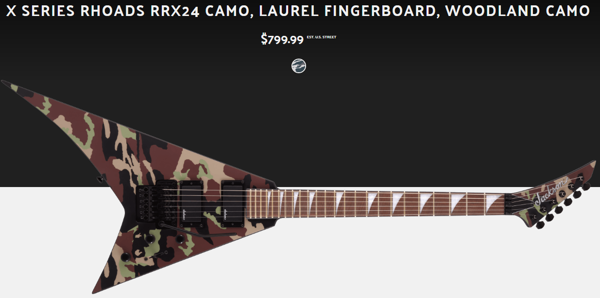
- Jackson Rhoads RRX24 (2021-onward): ‘X Series’ Rhoads. Made in Indonesia. Poplar body with maple neck (neck-thru). Bound laurel fretboard with pearloid sharkfin inlays (or for later colors inlays matching base color). Jackson active HH pickups. (early). Seymour Duncan Blackout AHB-1B / AHB-1N pickups (later). Floyd Rose Special tremolo. Vol, vol, tone, three-way blade. Black hardware. Reverse headstock matching finish. Finishes: black camo, woodland camo, Winter camo, matte army drab with black bevels ('23), red with black bevels ('23), black with yellow bevels ('23), black with neon green bevels ('23) , battleship gray with black bevels ('23), black.
- Jackson Rhoads RRX24-7: 'X Series' RR24 with seven strings. Made in Indonesia. Poplar body, bound laurel fretboard with pearloid sharkfin inlays. Duncan Design HB-7 HH pickups. Floyd Rose Special. Reverse headstock. Black hardware. Vol, vol, tone, three-way toggle. Finishes: gloss black
- RRXT24-7: ‘X Series’ RRXT with seven strings and 24 frets. Made in Indonesia. Basswood body, maple neck (neck-thru), painted back, bound laurel fretboard with pearloid sharkfin inlays. Reverse headstock. Jackson high-output HH pickups, TOM string-thru bridge. Finishes: gloss black
- RRX24M: Maple fretboard RRX24. Finishes: Snow white with black pinstripes
- Jackson Rhoads RX10D: MIJ or Made in India early ‘X Series’ Rhoads without pickguard. Alder, Poplar or basswood body. Bolt-on maple neck with rosewood fretboard. White sharkfin inlays (no binding). Armstrong 214/213 or Duncan Designed 1003B/1003N HH pickups. JT-500 or Takeuchi JT-580LP tremolo. Vol, tone,three-way toggle. Finishes: black, dark metallic blue, deep metallic red, trans blue, tobacco sunburst, amber sunburst, crimson swirl, cobalt blue, hot pink, satin black, colbalt blue swirl, inferno red, Lightning sky (AMS special run), polka dots (AMS special run)
- Jackson Rhoads RX10: Seen in 2000 catalog. 'X Series'. Likely made in India. Alder body, maple bolt-on neck. Rosewood fretboard with dots. 22 frets. Armstrong 214/213 HH pickups. JT-500 single locking tremolo. Vol, tone, three-way toggle. Finishes: black, dark metallic red, dark metallic blue
- Jackson Rhoads RRXT: ‘X Series’ Rhoads. Made in India. Basswood body (optional flame maple top), thru-body maple neck, rosewood fretboard with pearloid sharkfin inlay. Duncan Design HB102B/HB102N pickups HH. 2 vol, 1 tone, three-way toggle. Tonepros T3BT-B bridge. Finishes: black, kawasabi green with black bevels, trans black, satin black, snow white.
- Jackson Rhoads RRXT LH: Left handed version of above.
- RRX7: Same as above but with Duncan Design HB-7 pickups and Floyd Rose Special tremolo. 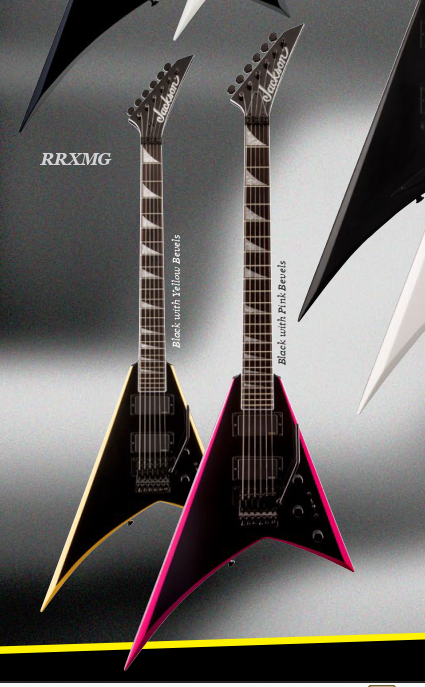
- Jackson Rhoads RRXMG: ‘X Series’ Rhoads. Made in India. Basswood body, bound maple neck (neck-thru), rosewood fretboard with pearloid sharkfin inlay, EMG 81/85 Hh pickups. Floyd Rose Special tremolo. 2 vol, 1 tone, three-way toggle. Finishes: black, snow white with black pinstripes, black with pink bevels, black with yellow bevels
- Jackson Rhoads RRX24-MG7: ‘X Series’ seven string Rhoads with EMGs. 2021. Poplar body with maple neck (neck-thru). Bound laurel fretboard with pearloid sharkfin inlays. 24 frets. EMG 81-7 HH pickups. Flory Rose Special tremolo. Vol, tone, three-way toggle. Reverse headstock. Black hardware. Finishes: satin black with primer gray bevels
Professional
- Jackson Rhoads Professional Pro: ‘Professional’ Series Rhoads from 1990 -95. MIJ. Poplar body, bound maple neck (neck-thru), ebony fretboard, MOP sharkfin inlays, Jackson J-50B(’90-’91) or J-50M(’92-’95) pickups OR Reflex Silver series. 1 vol, 1 tone, JE-1200 mid boost, three-way switch. Schaller JT-590 tremolo. Finishes: black, deep metallic blue, snow white, deep metallic red
- Jackson Rhoads Professional Std: Mid level ‘Professional’ Rhoads from ‘93-95. Poplar body, maple neck (neck-thru), rosewood fretboard with pearl dots. Jackson J-50N pickups HH, Takeuchi JT-580 tremolo. 1 vol, 1 tone, three-way toggle. Finishes: black, deep metallic blue, snow white, deep metallic red
- Jackson Rhoads Professional EX: Entry level ‘Professional’ Rhoads from ’92-95. Poplar body, bolt-on maple neck, rosewood fretboard with pearl dots, Jackson J-50M HH pickups. 1 vol, five-way switch. Takeuchi JT-580 tremolo. Fun fact: this model became the RR4 the next year, kind of. Finishes: black, deep metallic blue, snow white, deep metallic red
- Jackson Rhoads RR3: See entry under 'Pro Series'.
- Jackson Rhoads RR4: A more obscure MIJ Rhoads from 1996-97. ‘Professional’ Series. Poplar body with optional Gravure top. Bolt on. Rosewood fretboard with dots. JT-580 tremolo, JA213/JA214 HH pickups. Single volume and three-way switch. Headstock matches finish. Finishes: black, cobalt blue, trans violet, trans blue
JS Series
- Jackson Rhoads RR JS1X Minion: Short scale Rhoads 22.5” scale. Made in India. Poplar body. Bolt on maple neck with Rosewood (later amaranth) fretboard and pearloid sharkfin inlays. 24 frets. Jackson JE-10 HH set. Standard controls. Finishes: neon green, Ferrari red, satin black, snow white, neon yellow, metallic blue burst, neon burst
- RR Minion JS1XM: Maple neck version of above. Finishes: snow white, neon pink 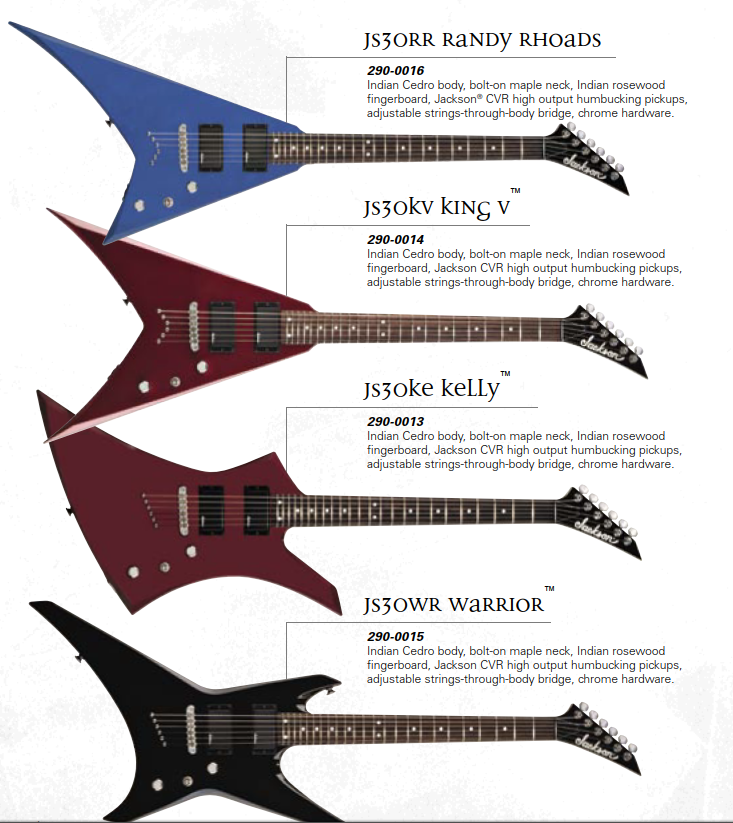
- Jackson Rhoads JS30RR: ‘JS Series’ Rhoads. Indian cedro body, bolt-on maple neck, Indian rosewood fretboard with dots, 24 frets, Jackson CVR-2b/CVR-2n HH pickups. No pickguard. JT-390 tune-o-matic string-thru body bridge. Vol, tone, three-way toggle. Finishes: black, deep metallic blue, inferno red.
- Jackson Rhoads JS32: Later ‘JS Series’ Rhoads. Made in India. Indian Cedro (’11-12) Basswood (’13-15) or Poplar (’16) body with bolt on maple neck, bound rosewood (now amaranth) fretboard with pearloid sharkfin inlays, 24 frets. Jackson CVR-2b/CVR-2n or JE-10/JE-10 high output pickups. vol, tone, three-way toggle controls on pickguard. Chrome or black hardware. Jackson licensed Floyd Rose tremolo. Finishes: black, gun metal gray, inferno red, natural oil, satin gray, black with white bevels, ivory
- Rhoads JS32 MAH: ‘JS Series’ Rhoads with mahogany body. 2021. Gold hardware, other later specs same. Finishes: natural
- Rhoads JS32 L/LH:Left handed option with later specs. Finishes: satin gray

- Jackson Rhoads JS32T/ FSR: TOM option of RR JS32 with Jackson JT-390 string-thru body bridge. Made in China (later.)Finishes: black, gun metal gray, inferno red, natural oil (mahogany body), satin gray, black with white bevels, ivory
- Jackson Rhoads JS42 Rhoads Ziricote: Limited edition from Musician's Friend. Has same specs as modern JS32 MAH Rhoads but with a caramelized maple neck, gold hardware and a special top.
- Jackson Rhoads Shuriken: Guitar Center exclusive Rhoads. Made in India. Indian cedro body. Maple bolt-on neck with bound rosewood fretboard and shuriken inlays. 22 frets. Jackson CVR HH pickups. Licensed double locking tremolo. Vol, tone, three-way toggle. Black hardware. Finishes: black with blood red bevels

- Jackson JS22-7 Rhoads: A JS series Rhoads in seven string! 2024. Poplar body, maple bolt-on neck. 26.5 scale length. 24 frets. Amaranth fretboard with piranha tooth inlays. Jackson HT7 bridge. Vol, tone, toggle. Black hardware. Note the atypical for a Rhoads model AT-1 headstock. Finishes: satin black
Signature Rhoads:
- USA Signature Christian Andreu Rhoads RR: Sig model of Gojira guitarist. Mahogany body and neck (neck-thru), ebony fretboard with 12ft fret Gojira inlay, Dragon graphic on body, Charvel MFB H bridge pickup, string-thru body bridge. Single volume. Finishes: satin black with gray bevels
- X Series Signature Christian Andreu Rhoads RRXT: ‘X Series’ version of sig. Nato body, maple neck (neck-thru), rosewood fretboard (no markers), Dragon graphic on body, Seymour Duncan HB-102B H bridge pickup, single volume, string-thru body bridge. Finishes: satin black
- Pro Series Signature Christian Andreu Rhoads RRT: Poplar body with flame maple top. Maple neck (neck-thru) with bound ebony fretboard. No markers. 22 frets. Jackson high-output bridge pickup. Jackson TOM bridge, string-thru body. Vol knob. Black hardware. Reverse headstock matching finish. Locking tuners. Finishes: natural (satin)
- USA Signature Limited Edition Oli Herbert Rhoads: Sig model of All That Remains guitarist. Mahogany body, black bound maple neck (neck-thru) with graphite reinforcement and urethane back finish, ebony fretboard with MOP ‘rune’ inlays. 24 frets, Seymour Duncan Duality pickups, single volume and three-way toggle.FU-Tone bridge with trem-setter. Gotoh tuners, At-1 headstock. Finishes: red rum
- Kevin Bond Rhoads: Sig. guitar of Superjoint Ritual guitarist. ‘Pro Series’. MIJ. Mahogany body and neck (neck-thru), ebony fretboard with custom inlay, Seymour Duncan Iommi HH bridge pickup, bridge with fine tuners, back hardware. Single volume. Jackson logo matches bevel. Finishes: black with blood red bevels, black with fluorescent green bevels
- Matt Tuck Sig. Rhoads: MIJ. Neck thru alder body, rosewood neck with 22 frets and custom neck inlays. EMG 85/ 81 HH pickups, JT-390 string-thru body bridge, reverse headstock (matches finish). One vol, tone, three-way toggle. Finishes: silver with black bevels, snow white with black bevels, black with silver bevels
- Pro Series Signature Mark Heylmun Rhoads RR24-7: 2023. Made in Indonesia. Seven string Rhoads by Suicide Silence guitarist. Nyatoh body, maple neck (neck-thru) with ebony fretboard. 24 frets. Extended 26.5 scale. Fishman Fluence Modern PRF-MH HH pickups. Single Vol w/push pull voicing, three-way toggle. Floyd Rose 1000 bridge. Gold hardware. Reverse headstock. Finishes: black with white pinstripes.
Other
-
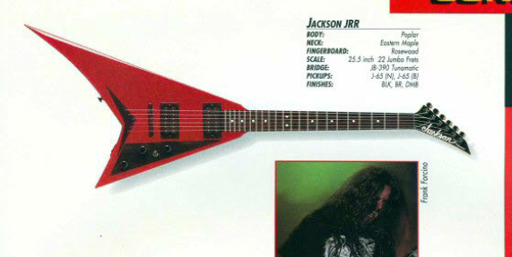
- Jackson Rhoads Concept JRR-94: ‘Concept’ Rhoads. MIJ from 1994. Poplar body, bolt-on maple neck, 22 fret rosewood fretboard with white dots, Jackson J-50M HH pickup. Tune-o-matic string through body bridge. Standard controls. Finishes: black, bright red, deep metallic blue
- Jackson Rhoads Performer PS3: ‘Performer’ PS-3 Rhoads. ’95-00. Poplar body, bolt on maple neck, 22 fret rosewood fretboard with dots, J170/J70 HH pickups, Tune-o-matic (TOM) string-thru body bridge. Finishes: black, deep metallic blue, red violet metallic , deep metallic green , black cherry
- Jackson Rhoads Performer PS3T: Or PS-3T. Locking tremolo version of above. JT-500 tremolo. Finishes: black, deep metallic blue, red violet metallic , deep metallic green, black cherry
- Jackson Rhoads R10: AX/S Series. Predecessor to RX10. (See entry) Alder body, maple bolt-on neck. Rosewood fretboard with dots. 24 frets (but image shows 22). Jackson JE10/JE10 HH pickups. JT-480 tremolo. Vol, three-way toggle. Chrome hardware. Finishes: Black, Metallic red, Metallic Blue
- Jackson Rhoads R10 Pro: AX/S Series. Predecessor to RX10D. (See entry) Like above but with sharkfin inlays. 24 frets. Armstrong JA10N/JA10B HH pickups. JT-480 tremolo. Chrome hardware. Finishes: Black, Metallic red, Metallic Blue
- Jackson Rhoads RR-X*: (Borrowed image, has aftermarket pickups and bridge in photo) Europe market only RR similar to the AT-X and DR-X Dinkies. From around 1998. Not to be confused with later 'X Series' Rhoads. MIJ. Poplar body with maple veneer on trans finishes. Bolt-on neck. 22 jumbo frets with sharkfin inlays. HH pickup config possibly J-65. Vol, vol, tone, three-way toggle. Aluminum pickguard. JT580LP tremolo. Black hardware. (Known) finishes: metallic black, metallic blue, trans purple, trans blue, trans red
- Jackson Rhoads RR5FR 30th Anniversary (MIJ): From 2010 available in five variations limited to 150 total and Jackson 'Bloodline' graphics. Alder body with maple neck (neck-thru). Rosewood fretboard with pearl sharkfin inlays. 22 frets. Dimarzio Tone Zone HH pickups. Floyd Rose FRT-o2000 tremolo. Vol, vol, tone, three-way toggle. Black or gold hardware. Headstock logo matches finish. Finishes: black with red graphics, black with yellow graphics, black with white graphics, white with red graphic, white with black graphics.
- Jackson Rhoads Elite Limited Edition: MIJ limited edition Rhoads with premium features from around 2011-12. Alder body, maple neck (neck-thru) with bound ebony fretboard. 22 frets. Alumiloid sharkfin inlays. Seymour Duncan JB/Jazz pickups with chrome pickup rings. Org. Floyd Rose (chrome). Vol, tone, Mid-boost circuit, three-way toggle controls. Dunlop strap locks. Chrome Jackson logo and 'Elite' truss rod cover. Chrome hardware. Included hard shell case. Headstock matches finish. Finishes: trans black, black with yellow pinstripes (Yellow Jackson logo), black. Fun fact: The alumiloid inlay look some later Indonesia Pro Series got took cues from this series.
- Jackson Rhoads Elite Limited Edition (TOM): Same run as above, but in different finish and string-thru body TOM option. Finishes: silver sparkle with black pinstripes, black (more?)
- Jackson Rhoads RR24 MIJ neck-thru* Either an exclusive or Japanese domestic model. See 'Jackson Stars RR-TN03' on the Jackson Stars page. 24 fret Rhoads with piranha inlay option and TOM string-thru body bridge. Reverse headstock. Single vol. EMG pickup 81?. Probably the same woods? If so Alder body, maple neck, rosewood fretboard. (Known) finishes: black
Jackson Soloist
Jackson’s other signature model (see Rhoads entry), these are neck-thru superstrats. The first was completed August 28, 1984. Early distinctions were between the Soloist Custom: neck-thru, 24 frets, ebony, bound fretboard, and ‘sharkfins’ or pearl dots and Soloists Student: the same but rosewood, no binding, and pearl dots only. Both of course were of equal quality. Floyd Rose, Kahler, and string through body were some options and Seymour Duncan’s were stock until 1985 when Jackson started to use in-house wound pickups. The finishes were pretty much whatever. Ontario era brings some changes such as the JT-6 bridge and an archtop option. In 1990 Soloists became a regular production model. An asterisk means that the model or specs of such are dubious and clarification or further research is needed.
USA/ American Series
- Jackson Soloist (80s Custom shop): A custom Soloist from the 80s. Poplar wings (?)Ebony or rosewood fretboard options with pearl sharkfins or dots. Biding on the 'Custom' model. Reverse headstock was an option, and the pickups and tone controls as well. One could use blade or mini switches and use passive or Jackson's active controls. Action options included the JE-1000, JE-1200, and JE-1500 boosts and sweeping controls. Finish options: solid, metal flake, sunburst, metallic, crackle, candy, pearl, custom graphics
- Jackson Soloist Custom: USA Soloist, pre-SL1. Poplar body with optional flame top. Bound ebony fretboard with pearl shark-fin inlays. Schaller JT-590 tremolo, J-200/J-200/J-50BC early, later HSS J-100VS/J-100VS/L-500XL pickups. Finishes: Lightning sky, skulls, standing woman, coral sea, black and white dragon, flames, multi colored dragon, turquoise stone, eerie dess, sunset, spheres, textured red pearl, snakeskin, reclining woman, holo flake, electric blue, red & blue swirl, black, more..
- Jackson Soloist SL1 / USA Select : This entry refers to the standard production USA flagship Soloist. Introduced in 1996- 98 is Poplar (see below image) but since 1999 Alder. Bound ebony fretboard with 24 frets, pearl sharkfin inlays. HSS pickup config, Seymour Duncan (TB-4 and STK-S1). Black or chrome hardware. Also available left-handed. Finishes: Black, agent orange, bolted steel, Ferrari Red, Burnt Cherry Sunburst, Lightning sky, Gun metal gray, natural, Nebula, Metallic black, Trans black, shattered glass, snow white, trans blue, snakeskin, Quicksilver, Trans green, Copper Snakeskin, Darby green, trans red, Yellow bengal, Absinthe frost, blue ghost flames, Acapulco Gold, black ghost flames, pile o' skulls, deep candy red, Eerie dess swirl.
- Jackson Soloist SL1T<: Same as above but with string thru body option.
- SL1 Left: Left hand option.

- Jackson Soloist SL2 (USA): First version from 1996-. A more budget USA production. Poplar body, ebony found board with no markers. Jackson JP-10 and JP-11 HH pickups. JT-580lp bridge. Vol, tone, three way toggle. Headstock matches finish. Silver hardware and pickup rings. Headstock matches finish. Finishes: Metallic black, Gun Metal Gray, Blue Green Pearl, Yellow/Gold Pearl, Deep Candy Red.
- SL2S: The same 90s only variant of USA SL2 just like above, but with sharkfin inlays on the ebony fretboard. Seymour Duncan TB4/SH1N HH pickups. Vol, tone, three-way toggle. Finishes: same

- Jackson Soloist SL2H (USA): From 2000 as a dual humbucker option- (not to be confused with 90s SL2) Alder body, 24 frets, sharkfins MOP, bound ebony fret board, Org. Floyd Rose, and Seymour Duncan JB/'59 HH pickups. Black hardware. There is a left-handed version. Vol, tone, three-way toggle. Finishes: black, Ferrari red, gun metal gray, metallic black, snow white, quicksilver, cobalt blue, darby green, acapulco gold, absinthe frost, agent orange, burnt cherry sunburst, natural, trans black, trans blue, trans green, trans red, black ghost flames, blue ghost flames, eerie dess swirl, bolted steal, lightning sky, nebula, shattered glass, snakeskin, copper snakeskin, yellow bengal, pile o skulls
- SL2HT: Fixed bridge of above. USA. Finishes: Black, burnt cherry sunburst, trans black
- SL2H-MAH (USA): Mahogany body SL2. USA. Also a 2002 limited but available other times as well. Silver hardware. Finishes: Burnt cherry sunburst, natural, trans black, trans blue, trans red.
- SL2H-MAHQ: Quilt top option. Finishes: Burnt cherry sunburst, natural, tans black, trans blue, trans green, trans red.
- GC/MF Limited Jackson Soloist SL2H- Green Ghost Flames wit Abalone inlays/logo: (Borrowed image) Year? Otherwise typical SL2H with unique aesthetic.
- Shannon Soloist, SHS1: Special Soloist. USA. Poplar body, bound maple neck with ebony fretboard. MOP sharkfin inlay. 24 frets. Seymour Duncan SHPG-1 and SSL-5 custom. OFR (non-recessed). Vol, tone, five-way switch. Limited edition, they feature a signature, unscalloped neck heel, fret nibs, and a few other small things. Finishes are black, slime green white, blue ghost flames, and possibly sherbet orange.
- Jackson Soloist SLS: A USA made Soloist with a twist, it’s light weight! They have a mahogany body, a different body shape than usual, a bound rosewood board with no inlays, a different headstock shape, a Gotoh tune-omatic bridge, and depending on the year, 24 or 22 frets. The pickups vary from a set of Dimarzio DP100 or Duncan Pearly Gates/Jazz combo. Note:This guitar is only from 1997- 98 and is not to be confused with later ‘Super Light’ Soloists below. Finishes: burnt cherry sunburst, trans blue, and black.
- Jackson Soloist SLS2*: A USA made ‘Super Light’ Soloist. More info needed. String through body tune-o-matic. HH set up with Seymour Duncan JB ‘59 and TB-4. Bound rosewood fretboard with MOP sharkfins. (Known) Finishes: USA Custom?
- Jackson Soloist SL AT-90: Arch-top Soloist, just with the ‘SLAT’ part split for some reason. Shown in 2001 catalog. Alder body. Quilt maple top, bound ebony fretboard with piranha inlay, JT-390 string-thru body bridge. Seymour Duncan STK-P1/STKP-1 pickups. Gold hardware. Finishes: all USA select
- SL AT-M: Same as above but with mini humbuckers. Seymour Duncan M3/M3 Finishes: all USA select
- SLATQH (USA): Limited 2002 Soloist. Mahogany body and neck, ebony fretboard with pearl sharkfin inlay, JT390 string-thru body bridge, Seymour Duncan JB/ ‘59 HH pickup. Finishes: amber sunburst, trans green, trans red, trans black, tobacco sunburst, violin brown, trans blue, natural, cherry sunburst
- Jackson Soloist American Series SL2 DX FR: 2025. HH USA Soloist that came after the SL3 for some reason. Alder body, three-piece maple neck (painted). SS frets. Heel truss rod access. Ebony fretboard with pearl sharkfin inlays. Seymour Duncan JB/ SH-1H HH pickups. No rings. Floyd Rose 1500 series. Black hardware. Luminlay side dots. Vol, tone, five-way switch. Gotoh locking tuners. Foam-core case. Dunlop strap buttons. Headstock matches finish. Finishes: Lemon Ice, satin black, snow white

- Jackson Soloist American Series SL2 DX HT: 2025. Hipshot hardtail version of above. Finishes: porsche gray
- Jackson Soloist American Series SL2MG: 2024. Same specs as above but with EMG 81/85 HH pickups. Finishes: matte army drab, stain black, stain lambo orange

- Jackson Soloist American Series SL2MG HT: 2024. Same specs as above but with Hipshot hardtail bridge. Finishes: matte army drab, satin black, lambo orange ('25)
- Jackson Soloist American Series SL3 (USA): 2022 production line USA Soloist built in Corona CA. (No USA Custom finishes however!) Despite name, has a SL1 layout (explanation). Alder body, three-piece maple neck. Ebony fretboard with MOP inverse shark fins. No binding. Seymour Duncan JB/ SSL-6/ Fat strat HSS pickups. (Direct mount). Floyd Rose 1500 tremolo. Locking Gotoh MG-T tuners. Luminlay side dots. Heel truss rod adjust. Dunlop strap locks. Black hardware. Vol, tone, five way blade. Headstock matches finish. Finishes: Riviera blue, gloss black, platinum pearl, slime green
Pro Series:
- Jackson Soloist SL2H (Sam Ash): A MIJ archtop SL2H. Alder body with flame maple top, maple neck. Ivoroid bound rosewood fretboard with sharkfin inlays. 24 frets. Seymour Duncan JB/'59 HH pickups. Floyd Rose (1000?) tremolo. Vol, tone,three-way toggle. Black hardware. Finishes: trans blue
- Jackson Soloist SL2/ SL2 MAH (Pro Series): An import ‘Pro Series’ Made in Indonesia. Alder body (later Mahogany) and ebony fretboard, piranha inlays and direct mount pickups. Seymour Duncan TB-6/SH-6N HH pickups. Floyd Rose 1000. Vol, tone, three-way toggle. Chrome hardware. Headstock matches finish on some finishes. Black or nickle hardware. Finishes: midnight blue, satin black, quicksilver, black, deep purple metallic, red mercury, trans purple, alien burst, trans root beer, burnt cherry burst, trans blue, and more, some with matching headstocks.
- Pro Plus Series Soloist SL2 Crackle: 2024 renaming of a special finish option. Updated specs like 'Okoume' body over mahogany, and stainless steel frets. otherwise same. Made in China. Black hardware. Headstock matches finish. Finishes: crackle
- SL2LH: Left handed option. Finishes: metallic black
- SL2P: Mahogany body SL2. (Compare to SL2Q MAH) Finishes: caramel burl, transparent black burst
- SL2P MAH: Mahogany body wit poplar burl top. Finishes: caramel Burl
- SL2P HT MAH: A hardtail version of the poplar burl top option. Finishes: Desert sand
- SL2A: ‘Pro Series’ 2020. Ash body top option. Finishes: unicorn white, charcoal gray
- SL2A HT: ‘Pro Series’ 2021. Hardtail option of above. Finishes: unicorn white
- SL2 HT MAH: 'Pro Series' Jackson HT6 bridge hardtail option of import SL2. Finishes: Natural mahogany
- SL2Q /MAH: 4A quilt top model. Finishes: burst cherry sunburst, trans black, trans red, winterstorm, trans green, Caribbean fade blue, and desert sunset sky
- Jackson Soloist SL2M/ SL2M MAH: 'Pro Series'. A two humbucker Soloist. Made in Indonesia. Mahogany body, maple neck, bound maple fretboard with pearloid piranha inlays. Direct mount Seymour Duncan SH-6N/TB-6 HH pickups. Floyd Rose 1000. Vol, tone, three-way toggle. Chrome hardware. Dunlop locking buttons. Headstock matches finish. Finishes: Magenta, metallic red, snow white 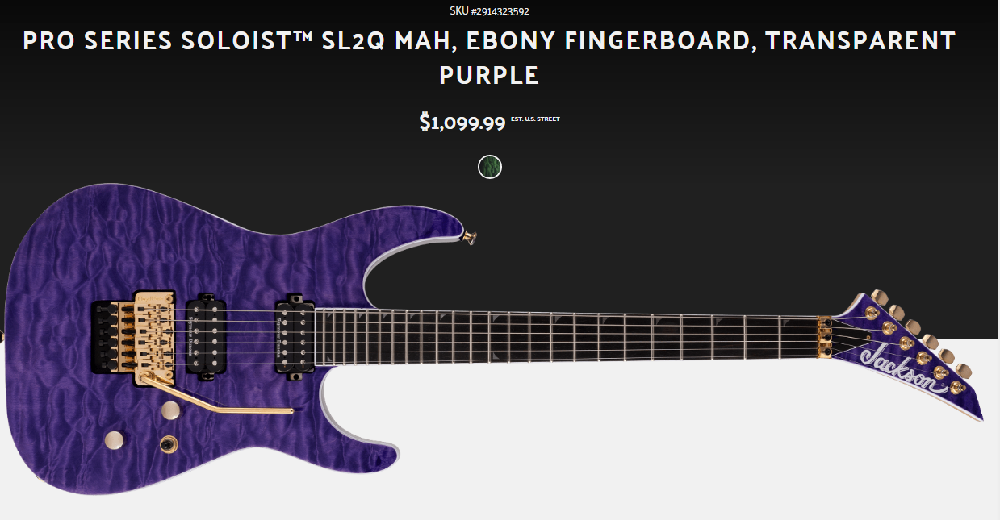
- SL2Q MAH: Pro Series SL2 with mahogany body AND quilt top option. Finishes: trans purple, trans green
- SL2Q MAH HT: Hardtail option. Finishes: desert sunset sky, fuchsia burst, transparent black burst
- SL2FM MAH: Like the above but with ebony fretboard and flame maple top. Black nickel hardware. Same otherwise. Finishes: coffee burst

- Jackson Pro Plus Soloist SL2 Shattered Mirror:
- Jackson Soloist SL3 (MIJ Pro Series): ‘Pro Series’ MIJ import first showing around 2003. Notably had real Seymour Duncan pickups early on when contemporaries used Duncan Designs. Alder body, rosewood with sharkfin inlays. 24 frets, (NO binding). Seymour Duncan HSS SHR101x2 hotrail Duncan and a bridge JB. JT-580LP or Floyd Rose 1000 (later) tremolo. Chrome or black (later) hardware. Headstock matches finish. Finishes: black, cobalt blue, amber sunburst, blue, red, trans black, trans blue, trans green, violin brown, trans red, natural, matte black, more..
- Jackson Soloist SL3 (later): 'Pro Series'. Made in Indonesia. Mahogany body, maple neck (satin finish). Ebony fretboard with piranha inlays. Seymour Duncan SSL-6/SSL-6/Flat Strat HSS pickups. Floyd Rose 1000. Vol, tone, five-way switch. Black hardware. Finish matches headstock. Natural finish neck. Finishes: satin orange blaze.. more...
- SL3Q MAH: Quilt maple top option. Mahogany body. maple neck, ebony fretboard with pearloid piranha inlay. Seymour Duncan SSL-x6x2, TB-6 HSS pickups. Floyd Rose 1000. Vol, tone, five-way switch. Black or chrome hardware. Headstock matches finish. Finishes: blonde, chlorine burst, dark amber, trans green, Caribbean blue fade, desert sunset sky, winterstorm
- Jackson Soloist SL3M: 'Pro Series' Soloist with three pickups. Basswood body, maple neck, bound maple fretboard with black piranha inlays. 24 frets. Seymour Duncan SSL-6x2/TB-6 HSS pickups. Floyd Rose 1000. Vol, tone, five-way switch. Black hardware. Headstock matches finish. Finishes: rainbow crackle 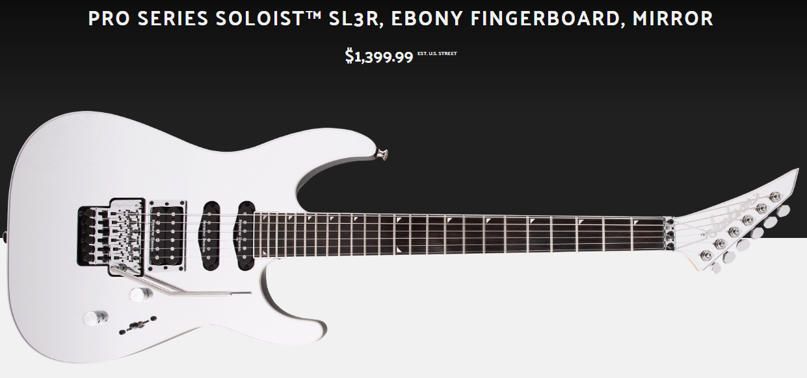
- Jackson Soloist SL3R: ‘Pro Series’ reverse headstock Soloist with unique finish. 2021. Basswood body with mirror top. Maple neck. Bound ebony fretboard with alumiloid piranha tooth inlays. Seymour Duncan TB-6/Flat Stratx2 HSS pickups. Floyd Rose 1000 tremolo. Vol, tone, five-way switch. Chrome hardware. Reverse headstock matching finish. Finishes: Mirror
- Jackson Soloist SLA3Q: 2023. Made in China. Six-ply arched top okoume body with quilt maple top. Maple/ walnut neck with ebony fretboard and piranha inlays, pearloid. Heel truss rod access. Seymour Duncan TB-6/ SSL-6 HSS pickups, direct mount. Floyd Rose 100. Vol, tone, five way switch. Black hardware. Headstock matches finish. Finishes: Polar burst, amber blue burst, gold bullion (gold hardware), amber tiger eye, deep black, fuchsia burst (2024)
- Jackson Soloist SLA3: 2023. Above minus top. Finishes: snow white
- Jackson Soloist SLA3W: 2024. Another variant of the above, with walnut top. Still Made in China. Gold hardware. Finishes: walnut
- Jackson Soloist SL4: Uncommonish MIJ import. Alder body. It has a rosewood board (NO binding) with sharkfin inlays. 22 frets. Seymour Duncan JB and TB4 HH pickups, JT580LP tremolo. Chrome hardware. It had a short early 2000s only run. Head stock matches finish. Finishes: trans red, natural, trans blue, black
- Jackson Soloist Pro Series SL7: Made in Indonesia. Mahogany body, one piece maple neck with graphite reinforcement. Ebony fretboard with alumiloid piranha inlays. Seymour Duncan TB-6/ SH6-7 HH pickups. Floyd Rose 1000 tremolo. Chrome hardware. Vol, tone, five way switch. Reverse headstock (later). Finishes: satin black, gloss black
- SL7A MAH: ‘Pro Series’ 2021. Ash top option of above with the later specs. Seymour Duncan Distortion 7 HH pickups. Finishes: Unicorn white

- Pro Series Soloist SL7 HT MAH/ASH: Identical to the above, but with the Jackson HT7 bridge. The Ash version has an ash top on the mahogany. Later specs: Seymour Duncan Distortion 7 HH pickups. Black nickle hardware. Finishes: northern lights, charcoal gray, unicorn white (later)
- Jackson Soloist SLS3: Something different. ‘Super Light’ Soloist and ‘Pro Series’. MIJ. Mahogany body, ebony fretboard with MOTO ‘shark eye’ inlays, Seymour Duncan Zebra ‘59 pickups, JT-390 TOM and 3x3 headstock. Finishes: white, black, stain black and a green swirl? color.
- Limited Edition Wildcard Series Soloist SL27 EX: Made in Korea. A special soloist with 27 frets. Alder body, maple neck, bound ebony fretboard with twelfth fret pearloid sharkfin inlay. 27 frets. Dimarzio Super Distortion, Air Norton S HS pickups. Org. Floyd Rose. Chrome hardware. Reverse headstock. Vol, tone, three-way toggle. Luminlay side dots. Headstock matches finish. Finishes: Blue sparkle, gloss black (2024)
- Limited Edition Wildcard Series Soloist SL2P: Made in Korea. Special soloist with high end options. Alder body with poplar burl top, maple/wenge neck, bound ebony fretboard with twelfth fret sharkfin pearloid outline inlay. Fishman Fluence PRF-MHB CK1/AK1 HH pickups. Vol, tone, push pull, three-way toggle. Org. Floyd Rose. Black hardware. Luminlay side dots. Dunlop strap lock. Headstock matches finish. Finishes: trans black burst
- Limited Edition Wildcard Series Soloist SL2FM: Special edition. Same as above but with flame maple top. Finishes: trans black burst
- Jackson Pro Plus XT Soloist SLAT HT6 Baritone: A six string baritone Soloist. 2024. Made in Indonesia. Arched nyatoh body with three-piece maple neck, neck-thru. 27" scale. Luminlay side dots, heel truss rod adjust. Ebony fretboard with black sharkfin inlays. Stainless steel frets. Seymour Duncan Nazgul/Sentient HH pickups. Toggle, volume, 'arcade style kill switch'. HT6 hardtail bridge. Black hardware. Reverse headstock. W/ gig bag. Finishes: satin black.
- Jackson Pure Metal Limited Edition Soloist SL1A: 2025. Made in? Stripped down Soloist with some interesting options. Bound poplar body, three piece maple neck. Bound ebony fretboard with sharkfin inlays. SS frets. Fishman Fluence Modern bridge humbucker. Floyd Rose 1000. Volume only. Chrome hardware. Finishes: gloss black.
MJ Series: 2021- MIJ Jacksons. All higher end
- MJ Series Soloist SL2: 2021. MIJ Soloist. Alder body, three-piece maple neck. Bound ebony fretboard with pearloid sharkfin inlays. 24 frets. Direct mount Seymour Duncan JB/Jazz HH pickups. Gotoh GE1996T tremolo. Vol, tone, three-way toggle. Black hardware. Dunlop strap locks. Luminlay side dots. Finishes: gloss black, snow white
MG Series
- SL3MG: A ‘MG Series’ version SL3 (MIJ) with a HH EMG 81/85 set installed.
- Jackson Soloist SLSMG: ‘Super Light’ and ‘MG Series’ Soloist. MIJ. Mahogany body, ebony fretboard with MOTO piranha inlay, JT390 string thru-body bridge, EMG HZ (early) or EMG 81/85 pickups. Finish: black, snow white, satin black, trans red (MF exclusive), trans black (MF exclusive)
- Jackson SLAT3-6: MIJ arch-top Soloist, put in the MG series via brochures. Alder body (flame maple veneer option), maple neck (neck-thru), rosewood fretboard with pearl sharkfin inlay. EMG 81/85 HH pickups. Floyd Rose FRT-2000 tremolo. Black hardware. Finishes: black, gun metal gray, trans black, green swirl
- Jackson SLAT3-7 Soloist: MIJ arch-top Soloist and the first neck-thru seven string Jackson made. Alder body (flame maple veneer option), maple neck (neck-thru), rosewood fretboard with pearl sharkfin inlay (later bound). EMG 81-7/707 HH pickups. Floyd Rose FRT-2000 tremolo. Black hardware. Notably has a seven in a line headstock, older ones bigger than later. Finishes: black, gun metal gray, trans black, natural (not in catalogs), red/blue mist (not in catalogs), green swirl (could be limited, but can't verify)
Concept Series
- Jackson Concept Series Soloist SL24MG: 2021 Peach Guitars and Musician's Friend exclusive. Made in Korea. Alder body with five piece maple/wenge neck. Bound ebony fretboard with sharkfin inlays. 24 frets. EMG 81/85 HH pickups (direct mount). Floyd Rose Org. tremolo. Neck heel truss rod adjustment. Vol, tone, three-way toggle. Black hardware. Includes Jackson Foam Core case. Finishes: gloss black.
- Jackson Concept Series Soloist SLAT7 HT: 2021 Peach Guitars and Musician's Friend exclusive. Made in Korea. Basswood body with maple neck. Bound ebony fretboard with piranha inlays. 26.5 scale length. 24 frets. Bare Knuckle Aftermath HH pickups (direct mount). Hipshot 7 hardtail bridge, string thru body. Vol, tone, three-way switch. Black hardware. At-1 3x4 headstock, Gotoh locking tuners. Luminlay side dots. Includes Jackson foam core case. Finishes: gloss black.
- Jackson Concept Series Soloist SL Walnut HS: 2022 Korean made Soloist with a neat aesthetic. Mahogany body with walnut top. Bound three-piece maple/wenge/maple neck. Ebony fretboard with pearloid piranha tooth inlays. Seymour Duncan Full Shred/ Custom FLat Strat HS pickups (white, direct mount). Org. Floyd Rose tremolo. Gotoh locking tuners and Dunlop strap locks. Vol, tone, three-way toggle. Gold hardware. Luminlay side dots. Includes Jackson foam core case. Headstock matches finish. Reverse headstock. Finishes: natural
- Jackson Concept Series Soloist SLAT7 HT MS: For 2022, a multiscale version of the SLAT7 Concept above, along with other spec tweaks. Made in Korea. Ash body with poplar burl top and white binding. Five-piece maple/wedge/maple/wedge/maple (phew..) neck with graphite reinforcement and satin finish on back. Bound ebony fretboard with pearloid piranha tooth inlays. Reversed AT-1 3x4 headstock. Fishman Fluence Modern PRF-MH8-CB1/ AB1 HH pickups. Vol, tone, three-way toggle with push/pull for voicing. Hipshot 7 fixed bridge, string-thru body. Graph tech TUSQ nut. Gotoh locking tuners and Dunlop strap locks. Luminlay side dots. Black hardware. Includes Foam core case. Finishes: Satin bourbon burst
{kind=link}
{kind=link}
{kind=link}
{kind=link}
X Series
- Jackson Soloist SL1X: ‘X Series’ Soloist meant to combine classic and modern. (Not sure why it’s an SL1 however..) 2021. Poplar body, maple neck. Bound Laurel fretboard with white dot inlays. 24 frets. Duncan Design HB-103B/ Hot railx2 HSS pickups. Floyd Rose Special tremolo. Vol, tone, five-way switch. Black hardware. Finishes: platinum pink, cab yellow
- Jackson Soloist SL1A DX: Eh, I give up with the name. It's an HS layout, so not a single pickup per one naming scheme, nor features the 'old school' non-recessed trem per the above. Basically a unique model. Made in Indonesia. Poplar body, maple neck. Bound laurel fretboard with pearloid sharkfin inlays. Jackson HS, high-output humbucker and mini rails. Floyd Rose special. Vol, tone, switch. Black hardware. Finishes: RD Cross Daggers (graphic)
- Jackson Soloist SL3X:‘X Series’ three pickup Soloist. Indonesian import. Features 24 frets, bound rosewood (later laurel) fretboard with sharkfin inlay, Floyd Rose Special, and Duncan Designed HB103B and HR101x2 HSS. One volume tone and five-way switch. Finishes: neon orange, neon yellow, graphite
- SL3X DX: ‘X series’ but with 80s crackle finishes. Made in China. Other differences are Jackson branded high-output pickups. Finishes: silver crackle, gold crackle, yellow crackle (2022, possibly gold but renamed), frost bite crackle (2022), quicksilver (2023)
- SL3X DX (2021): SL3X with normal specs, so Duncan Design pickups. (see entry) Otherwise same. Finishes: neon orange, neon yellow, satin graphite, lambo orange ('23), matte army drab ('23) absinthe frost ('23) 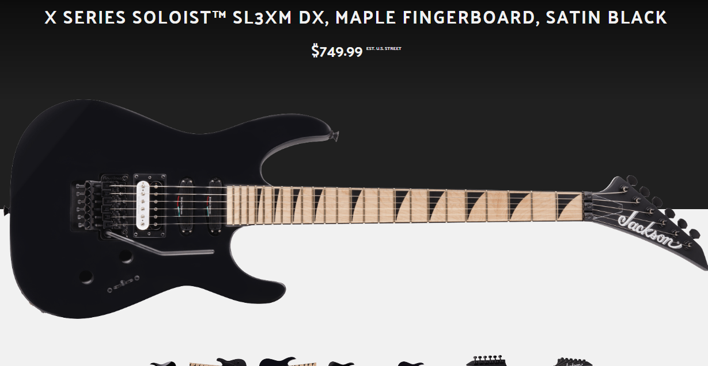
- Jackson Soloist SL3XM DX: ‘X Series’ SL3X with maple fretboard option. 2021. Finishes: stain black
- Jackson Soloist SL4X: An ‘X Series’ import based on the famous Charvel Spectrum which is in itself based on Jeff Beck's Jackson Soloist, so... full circle? Anyway poplar body, maple neck, bound rosewood (later laurel) board with dots, and three Duncan Design hot rails with a Floyd Rose Special. There are bright 80’s inspired finishes available: blue, pink, white, orange, natural, black. The pick-guards can be white or black.
- SL4X DX: Later models with less wild colors. Made in Indonesia. 'X Series'. Poplar body, maple neck, bound laurel fretboard with dots. 24 frets. Duncan Design HR-101x3 pickups. Floyd Rose Special. Vol, tone, five-way switch. Gold or black hardware. White or black pickguard. Finishes: butterscotch, specific ocean, snow white, gloss black
- Jackson Soloist SL5X: 'X Series' Soloist with elusive HSH setup!! Made in Indonesia. Poplar body, maple neck, laurel fretboard with sharkfin inlays. 24 frets. Duncan Designed HB-103/HR-101/HB-103 HSH pickups. Floyd Rose Special. Vol, tone, five-way blade. Black hardware. Finishes: blue burst, purple burst (FSR)

{kind=link}
{kind=link}
{kind=link}
{kind=link}
{kind=link}
- Jackson Soloist SLX:An Indonesian mid-level ‘X Series’ import, long running. Basswood body, bound rosewood (later laurel) fretboard with pearloid sharkfin inlays. Duncan Designed HB103B and HB103N HH pickups. Floyd Rose special. Vol tone and three way toggle. Options include Zebra wood and koa tops. (Note see SLX DX below for later version) Finishes: black, natural, kawasabi green, snow white, slime green, taxi cab yellow, metallic red, satin red pearl, lightning blue, green crackle, red crackle,
- SLX Spalted Maple: Finishes: natural
- SLX Zebrawood: Finishes: natural
- SLX Koa: Finishes: natural
- SLX Tamo Ash: Finishes: natural
- Jackson Soloist SLX LH: Left handed ‘X Series’ import. Same as above but with less finish options. Finishes: satin black, trans black.
- Jackson Soloist SLX DX: A newer ‘X Series’ Soloist. Basswood (maybe poplar) body (later nyatoh), bound laurel fretboard with pearloid sharkfin inlays. Made in Indonesia. Floyd Rose Special tremolo, Jackson high-output HH pickups. Finishes: satin white swirl, rocket red, satin black, snow white, silverburst, multi-color camo, gray camo, granite crystal (2022), red crystal (2022), rocket red (2022), silver burst, Tiger Jungle Camo (2022, also has covered pickups), manalishi green (2022), checker pattern (2023), polka dot (2024), Butterscotch camo (2024), bloodshot crackle (2024), bullseye ('25)
- Jackson Soloist SLXM DX: ‘X Series’ Soloist. 2021. Maple fretboard SLX option. Gold hardware. Same otherwise. Finishes: snow white
- Jackson Soloist SLXQ: older ‘X Series’ Soloist with a quilt maple veneer. Same as SLX but with EMG HZ H4-B and H4-AN pickups. Finishes: Burnt Cherry Sunburst
- Jackson Soloist SLXQ LH (2021): Left handed SLX with same (later) specs. Made in Indonesia. Finishes: trans black
- Jackson Soloist SLXT: ‘X Series’ Indonesian Soloist with TOM. TonePros T3BT-B bridge, basswood body, pearl sharkfins, bound rosewood fretboard, and EMG HZ H4-B/ H4-AN from 2012-15. Duncan Designed HB-103B and HB-103N from 2016. String thru body. Finishes: black, trans black, gloss black, kawasabi green, and torred.
- SLXFMG: 'X Series' Same specs as SLX but with EMG 81/85 HH pickup set and flame maple tops. Finishes: Trans red, trans black, trans blue
- Jackson Soloist SLXTQ: ‘X Series’ Soloist. Same as above but with quilt top. Duncan Designed pickups. Finishes: Natural
- Jackson Soloist SLSXMG: A ‘Super Light Soloist’ and also ‘X Series’. A mid level import, this has a normal Soloist look. Basswood body, rosewood bound fretboard with pearl sharks, Floyd Rose special, and EMG 81/85. Finishes are natural, gun metal gray, snow white and a flame maple veneer.
{kind=link}
{kind=link}
{kind=link}
{kind=link}
{kind=link}
{kind=link}
{kind=link}
{kind=link}
{kind=link}
- Jackson Soloist SLATXM 3-7: Basswood body, maple neck, maple fretboard with piranha inlays. Seymour Duncan Senitent/Nazgul HH (direct mount) pickups. Floyd Rose Special. Vol, tone,three-way toggle. Black hardware. AT-1 headstock. Finishes: Bright blue
- SLATHX 3-7: Hardtail option of above with rosewood fretboard. Finishes: gloss black
- SLATHXM 3-7: Maple fretboard option. Finishes: Snow white
- SLATHX 3-8: 'X Series'. Like above but eight string. Basswood body, etc same specs. 4x4 headstock. Seymour Duncan Blackout HH pickups. (Direct mount). Finishes: gloss black
- Jackson Soloist SLATHXQ 3-8: Like above but with quilt top. Seymour Duncan Nazgul/Sentient HH pickups. Finishes: Transparent black.
- Jackson Soloist SLATFXMG 3-8: Welcome to the long names club. ‘X Series’ import eight string Soloist. Indonesian. Mahogany arch top body, Jackson HT-8 bridge, bound rosewood fretboard, piranha inlays, EMG 808 HH set and extended 26.5 scale length. Reverse ‘AT-1 style’ headstock. One volume, tone and 3-way toggle. Finish is matte black only and the model is from 2013-14 only.
- Jackson Soloist SLATFXQMG 3-8: ‘X Series’. Same as above but in trans green finish.
- Jackson Soloist SLATXMG 3-6: ‘X Series’ Soloist with archtop body, EMG 81/85, Floyd Rose Special, and piranha inlays on the rosewood fretboard. From 2013-2015 the body is mahogany but it switched to basswood after. Reverse ‘AT-1 style’ headstock. Indonesian. Finishes: black, snow white, trans red, satin black, tobacco burst, white pearl metallic, candy metallic blue, copper pearl.
- Jackson Soloist SLATHXMG(M)3-6*: Same as above but with a maple fretboard. The only finish I’ve seen is white.
- Jackson Soloist SLATXMGQ 3-6: Same as above but with arched quilt maple top. Finishes: trans amber sunburst, trans black, trans red, and tobacco burst
- Jackson Soloist SLATTXMG 3-6: ‘X Series’ Soloist with TOM option. Mahogany body from 2013-15 then basswood after. TonePros T3BT-B tune-o-matic bridge, rosewood fretboard with piranha inlay, and EMG 81/85 pickups. Reverse ‘AT-1 style’ headstock. Finishes: cobalt blue, matte black, satin gray, candy metallic blue, and copper pearl.
- Jackson Soloist SLATTXMGQ 3-6: Same as above but quilt top. Finishes: trans black, trans red, trans purple, trans red burst, and burnt cherry sunburst.
- Jackson Soloist SLATTXMG 3-7: ‘X Series’ seven string Soloist made in 2013-14. Mahogany body, TonePros TP7 bridge, rosewood bound fretboard with piranha inlays, extended 26.5 scale and EMG 707 pickup set. One tone volume and three-way toggle. Finishes: black, silverburst, and slime green. Indonesian made.
- Jackson Soloist SLATTXMGQ 3-7: Same as above but with arched quilt tops. Finishes: trans black, and tobacco burst.
- Jackson Soloist SLATXMG 3-7: ‘X Series’ seven string Soloist with Floyd Rose Special tremolo. Mahogany body, rosewood fretboard with piranha inlays, 26.5 scale length, and EMG 707 pickup set. Finishes: matte black, and Quicksilver
- Jackson Soloist SLATXMGQ 3-7: Same as above but with arched quilt top. Finishes: trans black, trans red.
- Jackson Soloist SLXFMG: ‘X Series’ Soloist. Basswood body, bound rosewood neck with pearl sharkfin inlays, Floyd Rose Special and EMG 81/85 set. Indonesian made from 2015-16. Finishes: trans red, trans black, trans blue.
- Jackson Soloist SLATXSD 3-7: ‘X Series’ import Soloist. Reverse AT-1 headstock, basswood body, Floyd Rose Special, rosewood bound fretboard with piranha inlays, extended 26.5 scale. Pickups are Seymour Duncan Blackout AHB-7. Finishes: snow white and silverburst. Indonesian made.
- Jackson Soloist SLATXSDQ 3-7: Same as above but with arch quilt maple top. Finishes: trans blue, trans purple.
- SLATHXSDQ 3-7: Hardtail option.
- Jackson Soloist SLATHX 3-7: ‘X Series’ Soloist with basswood body, 26.5 scale, and string through body Jackson HT-7 bridge. Reverse AT-1 headstock, rosewood board with piranha inlays, and direct mount Seymour Duncan Nazgul/ Sentient HH set. Finishes: gloss black. Indonesian made.
- Jackson Soloist SLATHX-M 3-7: Same as above but with maple fretboard. Finishes: slime green, snow white.
- Jackson Soloist SLATXMSD 3-7: ‘X Series’ Soloist. Archtop basswood body, Floyd Rose Special, reverse AT-1 4x3 headstock. Maple fretboard with piranha inlays, extended 26.5 scale, Seymour Duncan Nazgul/Sentient combo. Finishes: bright blue. Indonesian made.
- Jackson Soloist SLATHXSD 3-8: ‘X Series’ Soloist. Archtop basswood body, Jackson HT-8 hardtail bridge, reverse AT-1 headstock 4x4, 26.5 scale length, and Seymour Duncan Blackout set. Indonesian made. Finishes: gloss black
- Jackson Soloist SLAT7 MS: Active Multiscale 7 string Soloist. 'X series'. Made in Indonesia. Basswood body, bound laurel fretboard with no inlays. 24 frets. 25.5-27" scale. EMG 808x2 pickups. Staggered bridge saddles. Vol, tone, three-way toggle. Black hardware. AT-1 headstock 4x3. Finishes: metallic blue
- SLAT8 MS: Eight string version of above. 4x4 headstock. 26-28" scale. EMG 909 pickup set. Finishes: gloss black Jackson Soloist SLATX7Q MS: Multiscale 7 string Soloist. 'X series'. Made in Indonesia. Poplar body, maple neck, laurel fretboard with offset dot pearloid inlays. 24 frets. 25.5-27" scale length. Jackson high-output pickups, HH. Staggered saddle bridge. AT-1 headstock 4x3. Black hardware. Finishes: trans blue burst
- Jackson Soloist SLATX8Q MS: Multiscale 8 string Soloist. 26-28" scale. Same as above otherwise. 4x4 AT-1 headstock. Finishes: trans black burst Jackson Soloist SLA6 DX Baritone: An X-series longer scale Soloist for 2022. Arch top nyatoh body with white binding. Made in China. Maple neck with graphite reinforcement. Bound laurel fretboard with pearloid piranha inlays. 26.5 scale length. EMG 81/85 HH pickups (direct mount). HT6 string-thru body bridge. Vol, tone, three-way blade switch. Finishes: satin black
{kind=link}
{kind=link}
{kind=link}
{kind=link}
{kind=link}
{kind=link}
{kind=link}
{kind=link}
{kind=link}
{kind=link}
Professional Series: Neck specs; Nut width: 1 11/16", thickness 1st 18mm, 12th 20mm
- Jackson Soloist Limited '91 professional: Celebrating their 12th year anniversary this archtop Soloist was limited to 200. This is MIJ and high quality as expected. Mahogany wings and flamed top, bound Brazilian rosewood, MOP shark fins and Jackson logo with a limited marker at the twelve fret, a gold JT-590 tremolo, Reflex Silver HH pickups, and 1 volume, 1 tone, and three way toggle. The finishes were antique cherryburst or tobaccoburst. Retail was $2450.
- Jackson Soloist Pro professional: The highest ‘Professional’ series. MIJ. Features poplar body, Schaller JT-590 tremolo, bound ebony fretboard, MOP sharkfins, and Jackson J-50m and J-200 pickups in HSS OR Reflex silver series with blackbox circuit. The Jackson mid-boost circuit (JE-1200) is present so that’s what the third knob does if you ever find one. They were made from 1990-95. Finishes: pearl white, metallic black, deep metallic blue, bright red
- Jackson Soloist ATT Pro: An archtop ‘Professional’ guitar with the tremolo option. Noteworthy is the 24.75 scale, though you’d never know it from the title. I suppose since it was neck-thru Jackson chose to classify it as a Soloist rather than Fusion. Anyway, the body is mahogany with a carved maple top, Jt-590 tremolo, bound ebony fretboard with reverse MOP sharkfin inlays, two J-90c pickups OR Reflex Silver series RSP-24 with blackbox circuit, and three way toggle. Only made from 1990-92. Finishes were trans amber, trans red, trans blue, and cherry sunburst. Retailed for $1695.

- Jackson Soloist ATN Pro: The above but with a string-through-body tune-o-matic bridge and slightly lesser price of $1595. This makes this one a bit closer to the Gibson LP. All other specs remain identical.
- Jackson Soloist XL professional: A ‘Professional’ Soloist with typical XL designated features. 1992-95. Poplar body, MOP sharkfin inlays, bound rosewood fretboard. J-100VS/J-100VS/J-92C HSS pickups. JT-590 tremolo possibly later JT-580. One volume, tone and five-way toggle. Black hardware. Finishes: pearl white, metallic black, deep metallic blue, deep metallic red.
- Jackson Soloist Std professional: Soloist with dots. 1993-95. Poplar body, Takeuchi JT-580 LP tremolo, rosewood board with pearl dots, Jackson J-92C and J-100Vs pickups. One volume tone and three-way. Aluminum cavity covers.(Like the Pro) Finishes: black, deep metallic blue, deep metallic red, dark metallic violet, snow white
{kind=link}
Signature Soloists
- Jackson Scott Ian Signature T1000 Soloist 2H: Scott Ian of Anthrax model. Mahogany with 1/8 maple top. Silverburst finish, matching headstock, 24 frets, ebony fretboard with custom lightning bolt inlays, ivoroid neck binding, Seymour Duncan Ian El Diablo bridge pickup and Seymour Duncan '59 Pickup (Neck), OFR. Single volume knob. Included G&G case.
- Jackson Scott Ian T-1000 Soloist 1H hardtail: Same as above but with single Seymour Duncan TB-4 pickup and string through body tom bridge.
- Scott Ian Signature Anarchy SLXT: ‘X Series’ version of T-1000 with wicked paint job from 2016. Made in Indonesia. Basswood body, maple neck (neck-thru), rosewood fretboard with lightning bolt inlays, single Duncan Design HB103 H pickup, string-thru body bridge. Vol knob. Finishes: anarchy artwork
- Scott Ian Limited ATL Soloist*: ‘Among the Living’ soloist from around 2012. Only 250 made and signed. Guitar Center exclusive. Basswood body, rosewood fretboard with custom ATL and Thraxagram inlays. 24 frets. Single Duncan Design humbucker pickup. String-thru body TOM bridge, single vol. Made in (?) Finishes: ATL
- USA Signature Chris Broderick Soloist 6: USA made signature guitar of Chris Broderick. 12” radius ebony unmarked fretboard with binding, plain or quilt maple top, mahogany body, reverse AT-1 headstock, recessed Floyd Rose, Planet Waves locking tuners, Ernie Ball strap locks, push pull volume coil splits. Dimarzio D Activator HH pickup set. Finishes: Gloss black, trans black, trans red, trans white
- USA Signature Chris Broderick Soloist 7: Seven string version of above.
- USA Signature Chris Broderick Soloist HT6: Hardtail option. Mahogany body, 12” radius, ebony unmarked fretboard, gold binding, Dimarzio D Activator HH pickup set, Jackson fixed bridge. Planet Waves Auto-trim tuning machines and Ernie ball strap locks. Finishes: gloss black, trans blue, trans red, trans white
- USA Signature Chris Broderick Soloist HT7: Seven string version of the above.
- Chris Broderick Soloist 6*: ‘Pro Series’ but with the tremolo. Mahogany body, laurel fretboard no markers, Floyd Rose, Dimarzio CB6 pickups HH, 12” radius, Reverse AT headstock, mini toggle kill switch, push/pull volume splits. Finishes: satin black
- Chris Broderick Soloist 7*: Same as above but seven string. Finishes: snow white
- Chris Broderick Soloist HT6: ‘Pro Series’. Megadeth guitarist Chris Broderick model with an atypical soloist body shape. Mahogany body, laurel fretboard no markers, 12” radius, Dimarzio CB6 pickups HH, hardtail bridge, Dunlop strap locks. Reverse AT-1 headstock. Finishes: metallic black, metallic blue. Made in Indonesia.
- Chris Broderick Soloist HT7: ‘Pro Series’. Seven string version of the above with Dimarzio CB7 pickups. Identical otherwise.
- USA Signature Mick Thomson Soloist: Slipknot guitarist sig guitar with a few unique features. Mahogany body, three-piece maple neck. Bound (white or black) ebony fretboard with no markers. Mick Thomson Seymour Duncan Blackout AHB-3S HH pickups. Jackson MTB HT6 bridge with fine tuners. Vol, three-way blade. Schaller strap locks. SKB hardshell case. Reverse headstock. Headstock matches finish. Finishes: arctic white, gloss black
- USA Signature Limited Edition Mick Thomson Soloist: Signature model of the guitarist from Slipknot. Mahogany body, ebony fretboard unmarked, black binding, Seymour Duncan EMTY Blackout pickups HH, recessed Floyd Rose Pro pre-blocked off for you. Schaller strap locks, Gotoh tuners, custom Anvil case and some Slipknot related case candy items. Finish: deep blood metallic.
- Mick Thomson SL2 Soloist: ‘Pro Series’ signature model of the Slipknot guitarist. Mahogany body, ebony unmarked fretboard with binding, Seymour Duncan Blackout AHB-3S pickups HH, recessed Jackson MTB HT6 hardtail bridge (with fine tuners). Lacks a truss rod cover. Finishes: gloss black, arctic white. Made in Indonesia.
- Jackson Pro Series Jeff Loomis SL7 Soloist: ‘Pro Series’ seven string signature model of the Arch Enemy guitarist. 2022. Basswood body, maple neck. Bound ebony fretboard with pearloid sharkin inlays. Active Seymour Duncan Jeff Loomis Blackout HH set. Floyd Rod 1500 tremolo. Single vol, three-way toggle. Seven in a line headstock. (rare for later stuff) Black hardware. Made in Indonesia? Finishes: black
- Jackson Pro Series Josh Smith SL7 Soloist: Made in Korea. Very unique looking strat-head soloist, sig. of Northlane guitarist. 27 length scale. Alder body, caramelized maple neck with graphite reinforcement. Ebony fretboard, no markers or binding. 24 frets. Bare Knuckle Josh Smith impulse pickups. HH. Evertune F7 bridge. Dunlop strap locks. Luminlay side dots. Heal mount truss rod. Vol, tone, three-way switch. Black hardware. Headstock matches finish. Finishes: Aquamarine
- Jackson Pro Series Signature Andreas Kisser Soloist: 2023 soloist with graphic for lead guitarist of Sepultura. Nyatoh body, maple neck, bound ebony fretboard with pearloid sharkfin inlays. Single EMG 81 with vol. Floyd Rose 1000. Chrome hardware. Made in Indonesia. Custom truss rod cover. Note: painted neck. Finishes: "quadra" graphic
{kind=link}
{kind=link}
{kind=link}
{kind=link}
{kind=link}
Other
- Jackson Custom Shop Limited Edition 30th Anniversary Soloist: 2014 custom shop soloists limited to (?). Poplar body, maple neck with 'old school' neck joint. Bound ebony fretboard with pearl sharkfin inlays. 23 frets. EMG SA1/SA1/81 HSS pickups. Floyd Rose 1984 tremolo, top mount. Vol, ?, ?, and three mini toggles. Nitro lacquer finish. Included anniversary hard case. MSRP: 5633.70$ Finishes: Ivory, pink, black, Ferrari red, yellow
- Jackson Soloist Elite Limited Edition: MIJ limited edition Soloist with premium features from around 2011. Alder body, maple neck with bound ebony fretboard. Alumiloid sharkfin inlays. Seymour Duncan JB/Jazz HH pickups with chrome pickup rings. Org. Floyd Rose (chrome). Vol, tone, mid-boost, three-way toggle controls. Chrome Jackson logo and 'Elite' truss rod cover. Chrome hardware. Included hard shell case. Headstock matches finish. Dunlop strap locks. Finishes: trans black, black, silver dragon, absinthe frost, amber sunburst Fun fact: The alumiloid inlay look some later Indonesia Pro Series got took cues from this series.
{kind=link}
{kind=link}
Jackson Dinky
Called ‘Dinky’ for the body size, they feature “a lighter body with high-speed playability” according to Jackson. These are bolt on guitars, otherwise identical to the Soloists in many flavors. Assume they have a compound radius 12” to 16” fretboard, maple bolt-on 24 fret neck, and standard volume, tone, and three or five way toggle unless otherwise noted. Asterisks mean more information and research is needed. As of 2023 the 'Virtuoso' series will be here too.
USA
- Dinky Style: The first custom 'Dinky' option which meant a bolt-on neck but a slim Soloist shape as opposed to the 'Vintage/Strat Style' shape. Specs as shown in the 1989 image were whatever. Notice the reverse headstocks and only 22 frets though Jackson noted that the '24 fret option was becoming popular' at the time. Also notice the Schaller tremolos. Finishes: USA custom options.
- Jackson Dinky Custom: USA Dinky, pre-DK1. Described as ‘detachable neck version of the Soloist Custom’. Basswood body, bound ebony fretboard with pearl sharkfin inlay, Schaller JT-590 tremolo, HSS J-100VS/J-100VS/L-500XL pickups. Finishes:Lightning sky, skulls, standing woman, coral sea, black and white dragon, flames, multi colored dragon, turquoise stone, errie dess, sunset, spheres, textured red pearl, snakeskin, reclining woman, holo flake, electric blue, red & blue swirl, black
- Jackson Exotic Dinky: A ‘Player’s Choice’ Dinky with special body woods. Koa body with quilted maple top, bound pau ferro fretboard with offset dots. Schaller JT-590 tremolo, Seymour Duncan STK-S1/ STK-S1/SH-5 HSS pickups. Gold hardware. Finishes: trans purple, tobacco sunburst, trans red, trans blue
- Jackson Flamed Dinky: USA Dinky with bookmatched flamed bodies. Fancy! Flame maple body, bound ebony fretboard with pearl sharkfin inlay. HSS J-100VS/ J-100VS/ L-500XL pickups. JT-590 tremolo. Finishes: trans black, trans purple, trans blue, tobacco sunburst
- Jackson Dinky DK1 (old): USA HSS Dinky, but not the ‘USA Select’. This has 22 frets, made from 1996-98. OFR tremolo, ebony bound fretboard with pearl sharkfin inlays, Seymour Duncan TB-4/STK-1/STK-1 pickups. Poplar body with optional maple quilt top. Finishes: black, deep candy red, blue green pearl, trans black, blue burst, purple burst, tobacco sunburst.
- Jackson Dinky DK1, (modern USA Select): The modern DK1. Alder body, white binding on the ebony fretboard, 24 frets, MOP sharkfin inlays, and EMG 81/85. OFR tremolo. Three way toggle with volume and tone. Finishes: black, Ferrari red, gun metal gray, metallic black, snow white, quicksilver, Darby green, Acapulco gold, burnt cherry sunburst, natural, trans black, trans blue, black ghost flames, bolted steel, nebula, shattered glass, yellow Bengal, pile o skulls, absinthe frost, agent orange, snakeskin, copper snakeskin, more?
- Jackson Dinky DR2: A USA made Dinky Reverse from 1996-98. Poplar or Ash body, 22 frets, ebony fretboard with no markers, and JT-580LP tremolo. Seymour Duncan SH-12/SH-2 pickups. Finishes: black, ultra violet burst, deep candy red, graphite, and cobalt blue satin.
- Jackson Dinky AT1: A USA Dinky with a different look and a headstock design that would later show up on other models. Made from 1996-97. Poplar or mahogany depending on solid or flame finish. Wilkinson VS-100 bridge, ebony fretboard with no markers, 22 frets, and JVA-1 Kent Armstrong pickups. They have metal covers on trans finishes. Finishes: black, deep candy red, blue green pearl, trans green, trans blue, trans black, cherry sunburst.
- Jackson Dinky AT1T: The above but with a Wilkinson GB-100 hardtail bridge.
- Jackson Guitar Center 25th Anniversary Dinky*: (Borrowed images) USA Dinky of only 25. 1988, seems to be an early Dinky. Rosewood fretboard, with dots. HS or HSS pickups with one vol, and one toggle (or other varying controls). Schaller tremolo. Finishes: red eerie dess (no swirl), blue eerie dess (no swirl)
- Jackson Guitar Center 1994 30th Anniversary Dinky*: (Borrowed image) USA Dinky, only 100 made. Bound ebony neck with sharkfin inlays. 24 frets. Bill Lawrence HH pickups. Schaller JT-590 tremolo. Single vol, and blade switch. Black or possibly gold hardware. Has special neck plate with it’s number. Finishes: black, metallic purple
- Jackson American Series Virtuoso: 2023 bolt on USA made Jackson. Alder body, five piece caramelized maple neck. Streaked ebony (not bound) fretboard with offset pearl dot inlays. Seymour Duncan SH-1N/JB HH pickups direct mount. Floyd Rose 1500. Black hardware. Finish matching bound headstock. Vol, tone, five way blade. Gotoh locking tuners, heel mount truss rod adjust, foam core case. Luminlay. Finishes: mystic blue, satin black, satin shell pink, specific ocean, red ('25)
Pro Series:
-
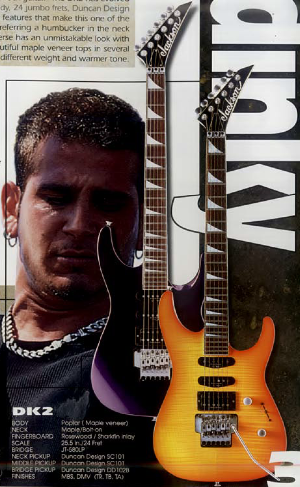
- Jackson Dinky DK2: MIJ ‘Pro Series’. Alder (org. Poplar) body, rosewood 24 fret bound fretboard. HSS set up with Duncan Design DD HB-102/ DD SC-101 or past ‘06 Seymour Duncan TB-4/ SH-1N pickups. Volume tone and five-way switch. JT-580LP tremolo. Silver hardware for early, black for post ‘06. Finishes: black, cobalt blue, inferno red, satin black, amber sunburst, trans black, tans blue, trans red, crimson swirl, eerie dess swirl, hot rod flames, blue orange flames (exclusive), red ghost flames (limited?), skulls, cobalt blue swirl (limited?)
- DK2FS: The Firestorm Boost Switch option.
- DK2L: Same as DK2 but left handed. Finishes: black, inferno red, trans blue, trans red.
- DK2S: Same DK2 but with Sustainiac in the neck position. Finishes: Black, inferno red, trans black, trans blue, trans red.
- DK2FF: A DK2 with the special flame inlay on the bound fretboard. Fun fact, that inlay originates in Custom Shop Jacksons. You can find a Soloist with the same inlay in the 1994/95 Jackson catalog.
- DK2LE*: A limited edition DK2 (MIJ version). Only 24 made around 2004. Alder(?) body, maple fretboard with dots, EMG 81 H pickup. Licensed Floyd Rose tremolo. Black hardware, 1 vol knob. Headstock matches finish. Note: more exact specs needed. Finishes: white.
- Jackson Dinky DK2T: ‘Pro Series’ Dinky (old) with TOM string-thru body option. MIJ. Alder body, rosewood bound fretboard with pearl sharkfin inlay, Seymour Duncan HH pickup and string thru-body bridge. Finishes: black, cobalt blue, inferno red, trans black, trans blue, trans red, crimson swirl, eerie dess swirl.
- DK2M Red ghost flames: MIJ special edition. Single Seymour Duncan JB TB4 pickup, reverse headstock matches finish, Jackson JT-580 tremolo. One vol knob, rest same.
- DK2 Pro Series: Current import ‘Pro Series’ dinky. Made in Mexico. Ash body, stain body finish. Bound (later unbound) ebony 24 fretboard with offset dot inlays. Floyd Rose 1000, and Seymour Duncan TB-4/SH-1N pickups (direct mount, zebra or black). Stock with dual locking strap buttons. Headstock matches finish. Finishes: green glow, charcoal gray, satin desert sage, granite crystal
- DK2Q: Same as above with quilt finish. Finishes: trans red.
- DK2P: Modern Pro Series DK2 with poplar burl top. Alder body, same otherwise. Finishes: purple sunset
- DK2-HT: 2015- Pro Series Modern DK2 with hard-tail string-thru body bridge. Maple fretboard. Specs otherwise normal. Finishes: metallic black
- DK2QHT: Ebony fretboard and 4A quilt maple top. Finishes: Tobacco burst
- DK2QMHT: Like above but with maple fretboard. Finishes: Chlorine burst.
- Jackson Dinky DK2M: A ‘Pro Series’ Dinky. MIJ. A HH version of the DK2. Alder body, rosewood or maple fretboard with pearl or black delrin shark fin inlay, Seymour Duncan TB-4/SH-1N. JT-580LP tremolo. Finishes: black, cobalt blue, inferno red, snow white, trans black, trans blue, trans red, crimson swirl, eerie dess swirl,
- DK2M (Later): 'Pro Series' MIM version. Alder body, Seymour Duncan TB-4/SH-1N pickups, maple fretboard offset dot inlays, Floyd Rose 1000. Has a five-way pickup selector to coil-split the pickups. Finishes: snow white, more..
- DK2 LH: Left hand version of the modern DK2, not to be confused with the org. DK2L. Alder body, ebony fretboard, offset dot inlay, Floyd Rose 1000. Seymour Duncan JB TB-4/’59 SH-1N pickups, Dunlop dual locking strap locks. Finish matches headstock. Finishes: gloss black
- DK2 Ash: Ash body ‘Pro’ DK2. Ebony fretboard, offset dot inlays, Floyd Rose 1000. Seymour Duncan JB TB-4/’59 SH-1N pickups, Dunlop dual locking strap locks. Finish matches headstock. Note: the baked and glow finishes have the Jackson logo raised on the headstock. Finishes: Charcoal gray, baked white, green glow
- DK2 Okoume: A woody looking okoume body ‘Pro Series’ DK2. Ebony fretboard, offset dot inlays, Floyd Rose 1000. Seymour Duncan JB TB-4/’59 SH-1N pickups, Dunlop dual locking strap locks. Finish matches headstock. Finishes: natural
- DK2QM: ‘Pro Series’ Dinky. Alder body with quilt maple top, maple fretboard with offset dot inlay, Floyd Rose 1000 tremolo. Seymour Duncan JB TB-4/’59 SH-1N pickups, Dunlop dual locking strap locks. Finish matches headstock. Finishes: chlorine burst
- DK2QM HT: ‘Pro Series’ Dinky. Spec’d to above but with Jackson HT6 hardtail string thru-body bridge. Finishes: trans purple burst
- Jackson Dinky DK3*: HSH Dinky only in the Jackson 2000 catalog. Duncan Design pickups. Pearl shark fin inlays, reverse headstock. Rosewood fretboard, a satin finish JT-580LP tremolo and hardware. MIJ. Note: There may have been a limited amount created ‘300’ , but I cannot confirm that. Finishes: black, snow white pearl, dark metallic violet, deep candy blue
- DK3 Ash: ‘Pro Series’ Dinky. Ash body. Rosewood fretboard with offset dot inlays. HSS Seymour Duncan TB-4/SSL-6 pickups. Floyd Rose FRT-o2000 tremolo. Headstock matches finish. Finishes: natural.
- DK3 Okoume: ‘Pro Series’ Dinky. Okoume body version of above. Finishes: natural.
- DK3M: Maple fretboard DK3. Alder body, otherwise spec'd identically. Finishes: satin black.
- DK3QM: Quilt top DK3, spec’d like above. White pickups. Finishes: chlorine burst.
- Jackson Dinky DK7M: ‘Pro Series’ seven string Dinky. Alder body, oiled maple neck and maple fretboard with offset dots. Heel access truss rod. Reverse headstock. Seymour Duncan SH-7 Distortion HH set. Floyd Rose 1000 tremolo. Finishes: metallic black
- DK7Q: Quilt maple top version of above. Ebony fretboard with offset dots. Finishes: trans red
- Jackson Dinky DK7 / Okoume: ‘Pro Series’ seven string Dinky. 2018. Okoume body with oil finish maple neck, ebony fretboard with offset dot inlay, Seymour Duncan Nazgul/ Sentient HH pickups with five-way switch. Dunlop dual-locking strap button and reverse headstock. Floyd Rose tremolo. Headstock matches finish. Finishes: natural.
- DK7Q HT: Alder body version of above with Jackson HT7 hardtail bridge and maple top. Finishes: chlorine burst
- Jackson Dinky DKA7: A ‘Pro Series’ Dinky “designed with the modern Djent player in mind”. Archtop alder body, maple neck with graphite reinforcement, “16 radius maple fretboard with offset dot inlays. 26.5 scale length, direct mount Dimarzio D Activator HH pickups with five-way switch. Kill switch, string-thru body bridge, Planet Waves locking tuners, Dunlop strap locks. Headstock matches finish. Finishes: satin white.
- DKA8: Eight string version of above. Dimarzio D Activator DP819 pickups and blank maple fretboard except shark-fin at twelfth fret. Finishes: metallic black
- Jackson Dinky DKA7M HT: ‘Pro Series’ Dinky seven string model. Ash body with arch top, 26.5 scale maple neck/fretboard with offset dot inlays, kill switch, Full Shred SH-10b/ SH-10n pickups, HT7 string-thru body bridge. AT-1 headstock. Finishes: natural ash
{kind=link}
- Jackson Dinky DKA8M HT: ‘Pro Series’ eight string Dinky. Alder archtop body, 28” scale maple neck/fretboard with black sharkfin at twelfth fret. Seymour Duncan Nazul/ Sentient HH pickups, kill switch, HT8 string-thru body bridge. AT-1 headstock. Finishes: satin orange blaze
- Jackson Pro Series Dinky DK Modern Ash FR6: ‘Pro Series’ high end Dinky. Made in Korea. Ash body, ebony fretboard with offset pearl dots, reverse AT-1 head stock, Luminlay side dots, active Fishman Fluence Open Core PRF-COC HH pickups, Floyd Rose 1000. Gotoh tuners. Five-way blade switch and push pull tone control to control voicing. Satin finish. Finishes: baked white
- Jackson Pro Series Dinky DK Modern Ash FR7: Same as above in 7 string and longer scale. Finishes: baked green.
- Jackson Pro Series Dinky DK Modern Ash HT6: Hipshot hardtail bridge option. Finishes: baked red, baked white
- Jackson Pro Series Dinky DK Modern Ash HT7: ‘Pro Series’ seven string Dinky with premium features. Ash body, 26.5 scale length, ebony fretboard with offset pearl dots, reverse AT-1 headstock. Graph Tech TUSQ XL nut, Luminlay side dots and active Fishman Fluence Open Core PRF-CO7 HH pickups. Five-way blade switch and push pull tone control to switch voicing, hipshot fixed bridge, Gotoh locking tuners. Satin finish. Finishes: baked blue
- Jackson Dinky DK Modern HT6 MS: Multiscale Dinky. Basswood body, maple neck, ebony fretboard with offset dot inlays. 25.5-26" scale. Fishman Fluence Modern PRF-MH7 set, direct mount pickups. Black hardware. Dunlop locking buttons. AT-1 headstock. Gotoh locking tuners. Vol, tone, push/pull, three-way blade. Headstock matches finish. Finishes: snow white, gloss black (2023)
- Dinky DK Modern HT7 MS: ‘Pro Series’. 2021, seven string version of DK Modern HT6 MS. Fishman Fluence PRF-MH8 pickups. Finishes: Eureka Mist, satin orange (2023)
- Dinky DK Modern Evertune 6: ‘Pro Series’ Dinky with Evertune. 2021. Basswood body, three-piece maple/wenge neck. Bound ebony fretboard with offset pearloid inlays. 24 frets. Fishman Fluence Open Core PRF-COC HH pickups. EverTune F6 bridge. Black hardware. Vol, tone (push/pull), five-way switch. Dunlop strap locks. Luminlay side dots. Reverse AT-1 headstock matching finish. Finishes: satin graphite
- Jackson Dinky EVTN7 Pro Series Modern. 2023 update. Finishes: gold sparkle, silver sparkle
- Jackson Pro Series Dinky DK2 Modern Evertune 7: A seven string with stock Evertune bridge. Basswood body, maple neck with graphite reinforcement. 26.5 scale length. 24 frets. Ebony fretboard with offset pearloid dots. Fishman Fluence Open Core PRF-CO7 HH pickups. EverTune F7 bridge. Vol, Tone, push pull, five-way switch. Luminlay side dots. Dunlop strap locks and locking tuners. Reverse AT-1 headstock. Black hardware. Headstock matches finish. Finishes: primer gray (satin)
- Jackson Dinky DR6*: A Dinky Reverse with a TOM option seen in the 2000 Jackson catalog. Likely MIJ. Ash body, rosewood fretboard with reverse sharkfin, 22 frets, three way toggle, Duncan Design HH pickups, and string thru-body TOM bridge. Chrome hardware. Finishes: appears to be a blonde and tobacco natural finish only.
- Jackson Dinky DR7: A seven string Dinky Reverse TOM bridge guitar. Alder body with flame maple veneer option. MIJ. Maple neck, rosewood fretboard with reverse pearl shark fin inlays. 22 frets, Duncan Design HB7x2 HH pickups. Vol, tone, three way toggle. String-thru body bridge. Satin chrome hardware. Note: This is commonly confused with the DX7 so make sure the hardware is SATIN chrome. (see entry). Finishes: black, deep candy blue, trans blue, trans red.
- DR7T: Same as above but with JT770LP locking tremolo. Finishes: black, deep candy blue, trans red, trans blue
- Jackson Dinky DKAQ: 2023 Pro Plus. Made in China. Maple/ walnut five piece neck. Bound arch top okoume body with quilt maple top. Bound ebony fretboard with offset pearloid dots. Heel truss rod access. Seymour Duncan JB/ '59 HH pickups, direct mount. Floyd Rose 1000. Black hardware. Luminlay. Vol, tone, five-way switch. Headstock matches finish. Finishes: trans purple burst, ghost burst, firestorm,
- Jackson Dinky Pro Plus DKAQ: Rename of the above for 2024. Same specs. Finishes: Emerald Green
- DKA: Above minus quilt top. Finishes: oxblood, metallic black, indigo blue
- Jackson Dinky MDK7P HT Pro Plus: 2023, striking Dinky. 26.5 scale. Three piece maple/walnut neck, ebony fretboard with staggered dot inlays. Basswood body. Bare Knuckle Brute Force HH pickups. Hardtail bridge. Vol, tone, five way blade. At-1 headstock, color matching. Black hardwave. Luminlay side dots. Finishes: Satin with black bevels (red inlays), Chlorine burst (poplar burl top), satin black
{kind=link}
{kind=link}
MJ Series: 2021- MIJ Jacksons. All higher end
- MJ Series Dinky DKR: MIJ Dinky with high end specs. 2021. Alder body, five piece maple/walnut neck with rolled edges. Ebony fretboard with pearloid (or yellow on satin black) sharkfin at 12th fret. 24 frets. Dimarzio Super Distortion/ Paf Pro DP151 HH pickups. Gotoh GE1996T tremolo. Vol, tone, five-way switch. Chrome hardware. Dunlop strap locks. Reverse headstock matching finish. Finishes: ice blue metallic, satin black
- MJ Series Dinky DKR Mah: MIJ Dinky. 2021. Mahogany bod, Five-piece maple/walnut neck with rolled edges. Ebony fretboard with pearloid sharkfin inlays. 24 frets. Seymour Duncan JB/ Jazz HH pickups. Gotoh GE1996T tremolo. Vol, tone, five-way switch. Black hardware. Dunlop strap locks. Reverse headstock. Headstock matches finish. Finishes: gloss black, snow white

- MJ Series DKRA: Ash top MIJ Dinky. 2021. Mahogany body with matte ash top. Five-piece maple/walnut neck with rolled edges. Ebony fretboard with pearloid sharkfin inlays. 24 frets. Seymour Duncan JB/ Jazz HH pickups. Gotoh GE1996T tremolo. Vol, tone, five-way switch. Black hardware. Dunlop strap locks. Reverse headstock. Finishes: matte black ash.
- MJ Series DKRP: 2021. Like above with poplar burl top. Dimarzio Super Distortion/ PAF Pro DP151 HH pickups. Other specs same. Finishes: transparent blue burst
MG Series
- Jackson Dinky DKMG: ‘MG Series’ MIJ Dinky. Arch-top alder body, with EMG HZ and afterburner knob or EMG 81/85 on newer models. JT-580LP tremolo. Rosewood fretboard with piranha inlays. Finishes: black, black forest (dark green), cobalt blue, satin black, trans black, trans red, cobalt blue swirl.

- DKMGFF: DKMG (old version) with the flame inlays. Same specs otherwise. Finishes: black
- DKMGT: Same as above with J-390 string thru-body. Has the same EMG HZ to EMG transition later. MIJ. Finishes: black, black forest, cobalt blue, satin black, trans red, trans black
- DKMGTFF: DKMGT (old version) with the flame inlays. Same specs otherwise. Finishes: black
- Jackson Dinky DXMG: ‘MG Series’ or 'X Series' Dinky. MIJ.(or MII '01) Cedro ('01), Alder, Poplar or Basswood with reverse headstock, pearl sharkfin inlays, and EMG HZ HB-104 pickups. JT-500 tremolo in 2001 and JT-580LP after. Note: If ever trying to identify this one from the other MG series, remember that this model does not have an arch-top. Finishes: black, gun metal gray, silverburst (MF exclusive?)
- DXMG Nissan NISMO Edition*: A special edition or perhaps one off.
- DXMGT*: JT-390 string-thru body bridge DXMG. Finishes: black, sunburst, red, trans red, more(?)
- Jackson Dinky DK27: ‘MG Series’ baritone scale Dinky from 2002-03(?). MIJ. Basswood body. Bound rosewood fretboard with sharkfin inlay, 24 frets, ‘27 inch scale. J-390 string-thru body bridge. EMG HZ HH pickups with Turbocharger, three-way toggle. Black hardware. Finishes: black, black forest, cobalt blue
Concept Series:
- Jackson Concept Series DK Modern MDK HT8 MS: Not that unusual, but under the Concept label per 2024. Limited. Basswood body, three-piece maple/wenge/maple neck. Multiscale 25.5-27/5. Fishman Fluence Modern HH pickups. Vol, tone, toggle with push pull voicing. Hipshot hardtail bridge. Locking tuners and strap locks. W/ Jackson Foam Core case. Black hardware. Finishes: matte black
X Series
- Jackson Dinky JX10: Early ‘JX Series’ or 'X Series' and later 'JS' Dinky with varying specs. Made in India from 2001-03. Alder, poplar, or Indian cedro body depending on year, rosewood fretboard with white small dot inlays. SSS Duncan Design SHR-101 hot rail pickups, Vintage style tremolo. Reverse AT-1 headstock. Finishes: black, deep metallic red, dark metallic blue, trans red, trans blue, tobacco sunburst, amber sunburst.
- Jackson Dinky DX10: The normal DX10 with the dot inlays. Made in India. Body wood, maple neck, rosewood fretboard with offset dot inlays. 24 frets. HH pickups. Locking tremolo, JT-500? Vol, tone, three-way switch. Reverse headstock. Finishes: black, blue, deep metallic red
- Jackson Dinky DX10D: ‘X Series’ guitar. Made in India (2000-02) or MIJ later. Alder or basswood body, Duncan Design 103B/103N, Jackson Jt-500 or Jt-580 (later) tremolo. Reverse shark fin inlays. Reverse headstock. Finishes: black, cobalt blue, inferno/ deep metallic red, amber sunburst, trans blue, trans red.
- Jackson Dinky DX10DFS: Same as above with Duncan Designed GEEQ-1 Firestorm booster. Finishes: black, dark metallic blue, cobalt blue, trans red, trans blue, tobacco sunburst, trans amber
- Jackson Dinky DX6: ‘X Series’ made from 2001-02. MIJ with JT-390 string thru-body bridge, rosewood fretboard, small pearl dots, 22 frets. Poplar body, maple top optional, Duncan Design 103B/103N HH pickups. Finishes: black, dark metallic blue, deep metallic red, amber sunburst, tobacco sunburst
- Jackson Dinky DX7: ‘X Series’ either MIJ or Made in India. Not the same thing as the above like it might seem. Seven string, alder body with flame maple top option. JT-790 string thru-body bridge, rosewood fretboard with reverse pearl sharkfin, 22 frets, Duncan Designed HB7x2 HH pickups. Finishes: black, dark metallic blue, deep metallic red, trans red, trans blue, tobacco sunburst
- Jackson Dinky DKXT: ‘X Series’ Dinky. Made in India. Basswood body, EMG HZ H4-B/H4-AN, TonePros T3BT-3 tune-o-matic bridge. Rosewood fretboard with sharkfin inlays. Finishes: black, snow white, trans red.
- Jackson Dinky DKA-R EX: Reverse headstock 'Extreme Dinky' with Fishman pickups. 'X Series'. Made in Indonesia. Poplar body with archtop, maple neck, bound laurel fretboard with sharkfin inlays. 24 frets. Fishman Fluence Modern HH pickups. Jackson locking tremolo. Vol, tone, three-way toggle, push/pull functions. Reverse headstock. Black hardware. Finishes: snow white, gloss black
- Jackson Dinky DKAF7 MS: ‘X Series’ multi-scale seven string Dinky. Made in Indonesia. Mahogany body, Reverse AT-1 headstock, 25.5-27” scale length, laurel or rosewood fretboard with offset dots, staggered hardtail bridge, Jackson blade pickups. Graphite reinforced neck, reverse AT-1 headstock. Finishes: gloss black, stained mahogany.
- Jackson Dinky DKAF8 MS: ‘X Series’ multi-scale eight string Dinky. Made in Indonesia. Identical specs to the above except 26-28” scale length. Finishes: gloss black, stained mahogany
- Jackson Dinky DK2X: ‘X Series’ Dinky. 2021. Poplar body, maple neck. Laurel fretboard with pearloid sharkfin inlays (upside down). 24 frets. Jackson high output. HH pickups. Jackson licensed tremolo. Vol, tone, three-way toggle. Black hardware. Reverse headstock. Finishes: gloss black, snow white
- DK2X HT: Hardtail version of above. Normal inlays. Finishes: snow white, black
- Jackson Dinky DK3XR: ‘X Series’ Dinky with neon like options. 2021. Poplar body, maple neck. Laurel fretboard with pearloid sharkfin inlays (upside down). 24 frets. Jackson high output HSS pickups (pink or white). Jackson licensed tremolo. Vol, tone, three-way toggle. Black hardware. Reverse headstock. Finishes: Cobalt blue (pink), neon green (pink), gloss black (white)
- Jackson DK3XR M HSS: 2023 update with maple board. Maple neck with black upside down sharkfins, reverse finish matching headstock. Nyatoh body. HSS pickups. Vol, tone, five way switch. Jackson licensed double locking trem. Chrome hardware. Finishes: frostbyte blue, deep purple metallic
- Jackson Dinky DK1 H: DK1, as in.. one hum. 2024. Nyatoh body, bolt on maple neck. Laurel fretboard with pearloid sharkfin inlays (upside down). Jackson pickup H, and licensed locking trem. One volume. Reverse headstock. Finishes: Skull Kaos
- Jackson Dinky DK1A: Nevermind. We don't know what the DK1 means.. Same as above but with maple fretboard and black inlays, plus HS set up. Jackson high-output humbucker and mini rail. Reverse headstock. Vol, tone, switch. Finishes: White tortoise, warhol skulls ('25)
- Jackson Dinky DK1A DX: Back to the old new meaning of DK1 again with a 2025 single Hum dinky. Made in Indonesia. Nyatoh body. Maple neck. Amaranth fretboard with sharkfin inlays. Jackson high-output pickup. Volume. Floyd Rose special. Black hardware. Finishes: Illuminati
Professional Series: Nut width: 1 11/16", thickness 1st 17mm, 12th 20mm
- Jackson Dinky Professional XL: ‘Professional Series’. 1992-95. Basswood body, rosewood fretboard with MOP shark fin inlays, Schaller JT-590 or JT-580LP tremolo, and Jackson J-92C and J-100VS pickups. I’m not 100% on these but for finishes: metallic black, pearl white, deep metallic blue, trans violet, trans blue, trans red, cherry sunburst, trans green.
- Jackson Dinky Professional Std.: ‘Professional Series’ Dinky. Made from 1992-93. Rosewood fretboard with dot inlays that match the finish. Features a transparent pick-guard a’ la Ibanez Universe or RG 770DX, though the electronics are still traditionally rear routed. Jackson 92C/J-100VS pickups and Schaller JT-590 tremolo. This model is speced identically to the XL. Finishes: Deep metallic red, candy blue, snow white, and black. Note: The black and white seem rarer. Also their pickguards are not transparent and the electronics are pickguard mounted.
- Jackson Dinky Reverse Professional: ‘Professional Series’ Dinky with signature reverse headstock. Basswood body, offset pearl dot inlays, rosewood or maple fretboard, Jackson J-85/J-80 pickups. From 92-93’ Schaller JT-590 but from 94-95’ Takeuchi JT-580LP tremolo. Finishes: black, deep metallic violet, candy blue, stone, natural green sunburst, natural red sunburst, natural purple sunburst. From 1996 this was renamed the DR5 (see entry.) Fun fact: This guitar inspired a few later guitars like the DK2M MIM version.
- Jackson Dinky Professional AR: A unique Dinky only found in the 1992 catalog. Ash body, arch-top offset dot inlay, rosewood fretboard, 22 frets, Schaller JT-590 tremolo, HSH Jackson J-50B/J-100VS pickups. Finishes: tobacco sunburst, trans red, TB, TS, TA, TV, Note: Some might not have divots around knobs.
- Jackson Dinky Professional EX: ‘Professional’ Dinky down to the basics. MIJ. 22 fret rosewood board with white dots, Takeuchi JT-580 tremolo, and HSH Jackson J-55/J-110 pickups. Uses a black pickguard which holds the electronics. Finishes: black, deep metallic red, deep metallic violet, snow white
- Jackson Dinky Professional LT: A unique Dinky only found in the 1992 catalog. Basswood body, bound rosewood fretboard with MOP sharkfin inlays, Schaller JT-590 tremolo, one vol, five way blade, 22 frets and HSS Reflex Silver pickups. Finishes: MB, CR, TR, MAG, PB, TA, PW, CS, TV
- Jackson Dinky Professional SP: A unique Dinky only found in the 1992 catalog. MIJ. Basswood body, rosewood fretboard with white dots, 22 frets, Takeuchi JT-580 tremolo and HSH J-100/J-100/ J-50M pickups.
- Jackson Dinky RVS Professional: (Specs pictured, borrowed images) A Dinky Reverse variant from 1995, not shown in catalogs (but appears in 1995 price list). Features a basswood or mahogany body, Takeuchi JT-580 tremolo, rosewood fretboard with MOP reverse sharkfins, Jackson J-85/J-80C pickups. Finishes: black, candy blue, dark metallic green, natural 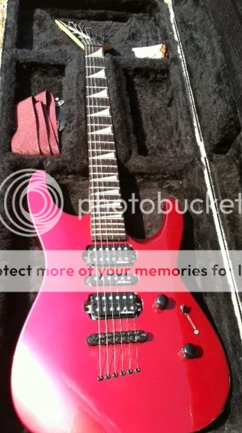
- Jackson Dinky RVH Professional: (Specs pictured, obviously borrowed images) A Dinky Reverse variant from 1995, not shown in catalogs (but appears in 1995 price list). Poplar body, JB-390 string thru-body bridge, rosewood fretboard with reverse MOP sharkfin inlays, and HSH Jackson JH-6/J-100/JH-6 pickups. Note: This does NOT have a neck back plate and thus has the J00etc type serial. This might apply to the above also. Finishes: deep metallic blue, dark metallic green, gradation red
- Jackson Dinky Professional HX: (Specs pictured, borrowed images) Rare Dinky from 1994ish. (Can be found in 1995 price list as shown) Poplar body, string thru-body J-390 bridge, offset white dot inlays and rosewood fretboard. Unsure of HH style pickups. Known finishes: black, dark metallic green, burgundy.
- Jackson Dinky DR3: A Dinky Reverse variant from 1996-2001, making it one of the last running ‘Professional’ Jackson (even if the logo disappears from the headstock later.) From 1996-97 basswood body, from 98 to ‘01 poplar or mahogany (tobacco sunburst) later. Jackson JT-580LP tremolo, rosewood fretboard with reverse MOTO sharkfin inlays. HH Duncan Designed 103B/103N pickups. This model is frequently mislabeled if it lacks the Professional logo so an easy way to identify (from a DX10D for instance) it is the presence of the three way toggle switch. Black or satin hardware. This was split into the DR6 and DR7 (see entries). Finishes: black, metallic violet, cobalt blue satin, trans violet, tobacco sunburst, trans red, trans blue, trans green.
- Jackson Dinky DR5: A renamed Dinky Reverse from 1996-97. Retains all the specifications of the original except for using Jackson JA-213/JX-2 pickups. JT-580 tremolo (not the low profile). Body is basswood or ash for the satin finish. Finishes: black, graphite, cobalt blue satin.
- Jackson Dinky AT2T: A ‘Professional Series’ version of AT-1. MIJ. Basswood body, JT-390 bridge, rosewood fretboard with dots, 22 frets, and JVA-1 Kent Armstrong pickups. Finishes: Black, cherry sunburst, trans purple. 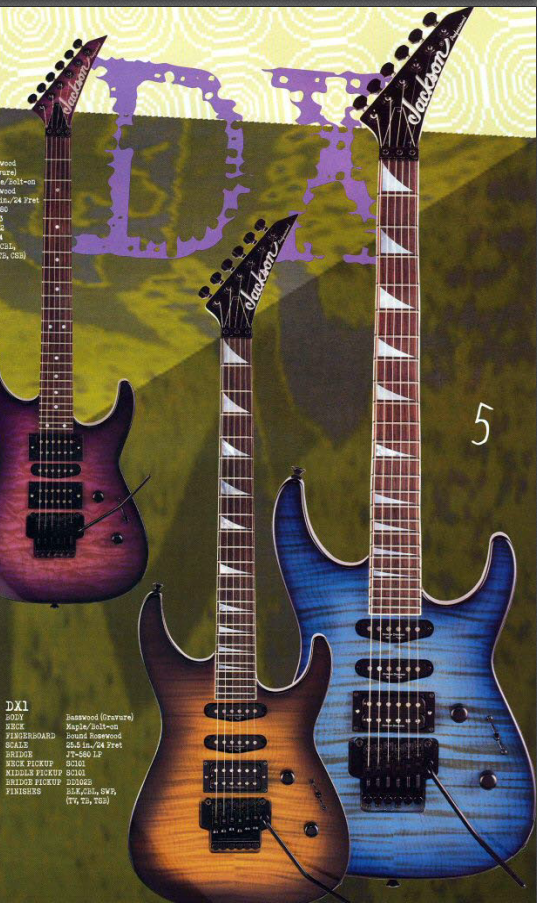
- Jackson Dinky DX1: A 90s Dinky inspired by the ‘Dinky XL’ according to the 1996 catalog. ‘Professional Series’ (ignore the 'X' as this predates Jackson's 'X Series' imports). MIJ. Basswood body, 24 frets, bound rosewood fretboard with shark-fin, Duncan Design SC101/DD102B pickups. JT-580LP tremolo. Finishes: black, cobalt blue, snow white pearl, trans violet, trans blue
- Jackson Dinky DX2: ‘Professional Series’ with HSH option. MIJ. Basswood body, rosewood fretboard, 24 frets with dot inlay, Jackson JA213/WB112/JA214 HSH pickups. JT-580 tremolo. Finishes: black, cobalt blue, trans violet, trans blue with ‘Gravure top’ option.
{kind=link}
JS Series
- Jackson Dinky JS1: ‘JS Series’ Dinky with reverse headstock. Made in India, Indian rosewood fretboard with white dots, 22 frets, Jackson JE-10 HH pickups, vintage tremolo. Finishes: black, deep metallic red, dark metallic blue, snow white. Despite the name, this was not the first JS Dinky, that’s the JS20 (see entry).

- Jackson Dinky JS11: ‘JS Series’ later generation. 12” radius. Made in India (early). Indian Cedro or Poplar body. Indian rosewood or later amaranth fretboard with pearloid dot inlays, 22 frets. Jackson JE-10 HH pickups. Chrome or black hardware, vintage tremolo. Finishes: black, snow white, metallic blue, metallic red,
- Jackson Dinky JS12: ‘JS Series’ later generation. Identical to above but 24 frets. Finishes: gloss black, snow white, metallic blue, metallic red
- Jackson Dinky JS20: ‘JS Series’ Dinky (introduced in 1996 price list as 'Jackson Student Series'), one of the first from 1996 to 2009. Made in India. Alder, poplar, or Indian cedro with optional flame top depending on year. Indian rosewood fretboard with white dots and 22 frets, Jackson JE-10/JE-14 HSS pickups. SSG23 vintage tremolo. Finishes: black, metallic red, metallic blue
- Jackson Dinky JS20 (2024): Not so basic Dinky for the low model name. Poplar body with quilt maple top, maple neck. Bound amaranth fretboard with pearloid sharkfin inlays. Jackson HH high-output pickups. Vol, tone, switch. 2-point bridge. Black hardware. Finches: blue burst, green burst, trans tobacco burst, trans black burst
- Jackson Dinky JS1X Minion: ‘JS Series’ short scale Dinky. 22.5 scale. Rosewood, later amaranth fretboard, pearl sharkfin inlay. 22 frets. 12" radius. Jackson JE-10 HH pickups. String-thru body bridge. Vol, tone, three-way switch. Black hardware. Finishes: gloss black, neon pink, bright blue, Ferrari red, pavo purple, neon orange, neon green, metallic blue burst,
- JS1XM Minion:Maple fretboard option. Black hardware. Finishes: snow white, Infinity Blue (2024)
- Jackson Dinky JS22/ DKA: ‘JS Series’ Dinky with a few nicer features. Made in India. From 2013 onward, replacing the JS22R (see entry). Arch-top Indian Cedro or Poplar/Nat top body. 24 Frets, bound Indian rosewood (later amaranth) fretboard with pearloid sharkfin inlay. Jackson JE-10 HH pickups and vintage tremolo. Finishes: metallic blue, satin black, snow white, natural oil.
- Jackson Dinky JS22LH/ DKA: Left handed version of the above. Finishes: gloss black
- JS22 DKAM: Okoume body, maple neck, maple fretboard with black sharkfin inlay. Jackson HH pickups. Vintage tremolo. Vol, tone, three-way blade. Black hardware. Finishes: black stain, red stain
- Jackson Dinky JS22R: ‘JS Series’ Dinky. Made in India from 2010-12. Indian cedro body, reverse headstock, Indian rosewood fretboard with pearloid shark-fin inlays (no binding), 24 frets. Jackson JE-10 HH pickups, vintage tremolo. Finishes: black, snow white, inferno red
- Jackson Dinky JS23: ‘JS Series’ Dinky. Made in India from 2010-12. Non-reverse headstock version of JS22R also with a HSS option. Indian cedro body, 24 frets, pearloid sharkfin inlays (no binding), Jackson JE-10/JE-14 HSS pickups, vintage tremolo. Finishes: black, snow white, natural
- Jackson Dinky JS24 DKAM: ‘JS Series’ archtop Dinky with 24 frets and maple fretboard. 2021. Mahogany body, caramelized maple neck. Bound caramelized maple fretboard with black sharkfin inlays. Jackson high-output pickups HH. Two-point fulcrum tremolo. Vol, tone, three-way blade. Black hardware. Finishes: black stain, red stain
- Jackson Dinky JS30/DK: ‘JS Series’ Dinky with locking tremolo option. Made in Japan from 2000-03, India from ‘04-09. Poplar body in ‘02, Indian cedro later, with flame top options for all. 22 fret indian rosewood fretboard with dots, reverse headstock, Jackson CVR-2 HH pickups, Jackson JT-500 or JT-580(?) tremolo. Finishes: black, dark metallic red, dark metallic blue, trans black, trans blue, gun metal gray, snow white, tobacco burst.

- Jackson Dinky JS30 EX: Guitar Center exclusive. Later JS Dinky with active pickups. Made in China. Agathis body, maple neck, bound blackwood fretboard with sharkfin inlays. 24 frets. Jackson active HH pickups. Jackson licensed tremolo. Black hardware. Vol, tone, three-way switch. Satin finish neck. Finishes: red stain
- Jackson Dinky JS30DKT: Early TOM option JS Dinky. Made in India. Alder body with flame maple veneer option. Rosewood fretboard with dots. 24 frets. JT-390 string thru-body bridge. Jackson CVR2 pickups. Silver hardware. Finishes: black, dark metallic blue, dark metallic red, gun metal gray, trans black, trans blue 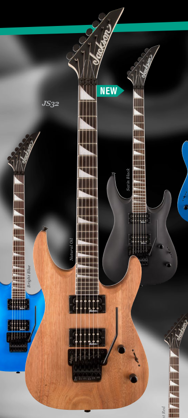
- Jackson Dinky JS32/ DKA: ‘JS Series’ Dinky with upgraded features. Made in India. 2011-15 Indian cedro body, 2016- Poplar, Mahogany for Natural oil finish. Arch-top body from 2013 on. Bound Indian rosewood fretboard with pearloid sharkfins, 24 frets, Jackson licensed double locking tremolo, Jackson CVR-2b/2n or Jackson JE-10 HH pickups. Black hardware from 2013 onward. Finishes: black, gun metal gray, inferno red, natural oil, satin black, bright blue, pavo purple, neon orange
- Jackson Dinky JS32 DKAP: 2024 refresh, at least in finish. Poplar body with burl top. Otherwise same. Finishes: trans black burst.
- JS32L: Left hand version of above. Finishes: bright blue
- Jackson Dinky JS32M/ DKAM: Maple neck version of above with black sharkfin inlays. Made in India, poplar arch-top body, Jackson JE-10 pickups, Jackson double locking tremolo. Finishes: gloss black, snow white
- Jackson Dinky JS32Q/ DKA: ‘JS Series’ Dinky with premium features. Made in India. Indian cedro or Poplar from 2016 on with arched body and maple quilt top. Bound Indian rosewood (later amaranth) fretboard with pearloid shark-fin inlay, 24 frets, Jackson licensed double locking tremolo, Jackson JE-10 HH pickups. Black hardware. Finishes: trans amber sunburst, trans black, trans natural, dark sunburst, trans purple burst, trans blue, trans green burst
- JS34Q DKA-M:Maple neck version. Made in China. Finishes: trans blue, trans red
- Dinky JS32Q DKA HT: Hardtail option. 2021. Finishes: transparent black burst, transparent green burst, transparent purple burst
- Jackson Dinky JS32TQ/ DKA: Quilt top and TOM option for JS32Q (above). JT-390 string thru-body bridge. Note: A Long and McQuade exclusive version may feature active Jackson pickups. Finishes: trans black, trans red, trans blue

- Jackson Dinky JS32R: ‘JS Series’ Dinky with reverse headstock and locking tremolo. 2010-12. Made in India. Indian cedro body, Indian rosewood fretboard (unbound) with pearloid shark fin inlay, 24 frets, Jackson licensed double locking tremolo, Jackson CVR-2 HH pickups. Replaced by the JS32 Dinky (see entry). Finishes: black, gun metal gray, snow white, trans black, tobacco burst.
- Jackson Dinky JS32RT: Same as above but with JT-390 string thru-body bridge. Finishes: black, gun metal gray, snow white, trans black, tobacco burst
{kind=link}
{kind=link}
{kind=link}
{kind=link}
{kind=link}
{kind=link}
{kind=link}
{kind=link}
{kind=link}
- Jackson Dinky JS22-7: ‘JS Series’ seven string Dinky from 2013- Reverse AT headstock, arch-top Indian cedro or poplar body, Indian rosewood fretboard with piranha inlays, extended 26.5 scale length, Jackson high output HH pickups, Jackson HT-7 bridge (hard-tail). Graphite reinforced neck. Made in India. Finishes: satin black
- Jackson Dinky JS22-7 DKA-M: A special edition of above with maple fretboard and black piranha inlay. Basswood body. Finishes: gloss black

- Jackson Dinky JS22Q-7 DKA HT: ‘JS Series’ hardtail seven string Dinky refresh. 2021. Poplar body with quilt maple top, maple neck. Bound amaranth fretboard with pearloid piranha tooth inlays. Jackson high-output pickups HH. Jackson HT-7 bridge. Vol, tone, three-way blade. AT-1 headstock. Black hardware. Finishes: transparent black burst
- Jackson Dinky JS32-7, DKA JS22-7 HT: ‘JS Series’ seven string Dinky from 2017-. Watch for name changes over the years. Poplar body with arch-top, bound Indian rosewood fretboard with pearloid piranha inlay, 26.5 scale length, reverse AT headstock, Jackson high output HH pickups (direct mount). HT-7 hard-tail bridge. Made in India. Finishes: stain black, snow white.
- Jackson Dinky JS32-7Q: Same as above with quilt maple top. Finishes: natural, tobacco burst
- Jackson Dinky JS32-8/ DKA HT (Q): ‘JS Series’ eight string Dinky from 2013, with changes in 2017-. Indian cedro until 2026, then Poplar body. Optional quilt top. Made in India (later China), bound Indian rosewood (later amaranth) fretboard, pearloid piranha inlay, 26.5 scale length, 24 frets, HT-8 hard-tail bridge, Jackson high output HH pickups. AT-1 headstock, Black hardware. Finishes: trans red, satin black (no top), trans black
- Jackson Dinky Standard Shuriken: Made in India. Guitar Center exclusive. Seems to be a JS Dinky with unique aesthetics. Indian cedro body with quilt maple top. Maple neck, bound rosewood fretboard with shuriken inlays. 24 frets. Jackson pickups HSS. Vol, tone, five-way switch. Dual fulcrum tremolo. Chrome hardware. Finishes: trans red

{kind=link}
{kind=link}
{kind=link}
{kind=link}
Signature Dinkys:
- USA Signature Phil Collen PC1, and limited: A long running, but not the first, signature guitar of Def Leppard’s Phil Collen. Koa (early) or Mahogany body, plain or flamed maple fretboard unmarked, Fender headstock (or strat like headstock on earlier ones), Dimarzio Super 3/HS-2/ PC1 Sustainer Driver HSS pickups. Org. Floyd Rose. 24 frets. Gold or black hardware, master vol, tone, and intensity control knobs, heel truss rod accesses. There is a 2010 30th anniversary splatter version as well, limited. Finishes: trans amber, trans black, trans blue, trans green trans red, blue frost, satin gray, au natural, chlorine, purple daze, mocha, red plum, root bear, solar, (special) hand painted splatter
- USA Signature Limited Phil Collen PC1 Claro Walnut: Special edition of above (modern spec). Carmelized mahogany body with claro walnut top. Dimarzio DP427/ Fast Track 1/ PC1 Sustainer Driver.
- Jackson PC2 Phil Collen Signature*: (Borrowed image) 1997. A USA Guitar Center special limited to 100. Has a Custom Shop logo. Basically a USA made PC3. Mahogany body, maple neck and fretboard. Seymour Duncan HSS pickups (what?) Wilkinson tremolo. Chrome hardware. Finishes: natural, amber, trans red
- Jackson PC3 Phil Collen Signature: A MIJ version. Mahogany body with quilt maple top, quilt maple fretboard unmarked, Wilkinson VS50 tremolo/J-580LP, Duncan Design SC101/SC101/DD103B HSS pickups. Silver hardware. Finishes: trans amber, trans red, trans green
- Christian Olde Wolbers (COW) Signature Dinky 6: Fear Factory’s signature dinky. Reverse headstock. Mahogany arch top, three piece mahogany neck, ebony fretboard no markers, EMG 81 H pickup, string thru-body bridge. Black hardware. Finishes: black, silverburst, camo, red pearl
- Christian Olde Wolbers (COW) Signature Dinky 7: Seven string version of above. Uses EMG 707 single pickup instead. Finishes: black, silverburst, camo, red pearl
- Adrian Smith SD/M (DK) USA: Iron Madien’s Adrian Smith’s Dinky or San Dimas. Alder body, maple or ebony fretboard with dots, Dimarzio Super Distortion and Samarium Cobalt SCN HSS pickups. Top mount Org. Floyd Rose. ‘Strat’ head headstock, black hardware, white or black pickguard. 22 frets. Later models feature heel access truss rod in pictures, but not reality. Finishes: Snow white, pagan gold
Note: Jackson classifies it as a ‘Dinky’ in older catalogs like 2012 but now Jackson lists it as ‘San Dimas’. Because of the original classification I have it listed under Dinky. Later models are on the Jackson Database#2 under 'San Dimas'. Also, by Charvel standards this would actually be a ‘So-Cal’ styled guitar. - X Series Signature Adrian Smith SDX/M: ‘X Series’ version of above. Basswood body, laurel or maple fretboard with dots, 22 frets, Jackson high output HSS pickups, Floyd Rose Special, black hardware and white or black pickguard. Made in Indonesia. Finishes: Snow white
- SDXQM: Quilt maple top version of above. Maple fretboard only in trans green. Vintage ‘butt adjust truss rod. (But not really)
- Pro Series Roman Ibramkhalilov MDK HT6 Baritone :
{kind=link}
Other
- Jackson Dinky JDR Concept: ‘Concept Series’ from 1994. MIJ. Poplar body, rosewood fretboard with offset white dot inlay, 24 frets. HSH Jackson J-55/J-110/J-55 pickups. JT-500 tremolo. Note: You could say the next year this was remade as the Jackson Performer PS4. Finishes: black, bright red, deep metallic blue.

- Jackson Dinky JDX Concept: ‘Concept Series’ from 1994. Poplar body, unique JB-300 fixed bridge, rosewood fretboard with white dots inlay, 24 frets. HSS Jackson J-75/J-110 pickups. Black hardware. Finishes: black, bright red, and deep metallic blue
- Jackson Performer PS1 Dinky: ‘Performer’ PS-1 Dinky with a surprising amount of variations. Made in Japan or Korea from 1995 and disappears from catalogs by 2000. Alder body, rosewood fretboard with dots, 22 or 24 frets (the 1996 catalog and some further research shows 24), JT-480 vintage tremolo, (or double locking on some), Jackson J135/J70 HSS pickups (or HSH pickups on the 24 fret models). Black hardware. Finishes: black, deep metallic blue, red violet metallic, blue green metallic, black cherry, also trans veneers. Note: applicable to all Performers, the spacing of the twelfth fret inlay indicate country of origin. Close= Japan, further= Korea.
- Jackson Performer PS2 Dinky: ‘Performer’ PS-2 Dinky. Made in Japan or Korea from 1995- ‘00. Alder body, rosewood fretboard 24 frets with dots, JT-500 tremolo, Jackson J135/J70 HSS pickups. (Note: There may be variants with a vintage style trem.) Finishes: black, deep metallic blue, red violet metallic, blue green metallic, black cherry, trans veneers
- Jackson Performer PS4 Dinky: ‘Performer’ PS-4 Dinky Reverse. Made in Japan or Korea. Alder body, 24 fret rosewood fretboard with off-set dot inlays, JT-500 double locking tremolo, Jackson J170/J135/J70 HSH pickups. Note: the ‘96 catalog shows strat type knobs on this model, but examples in the wild will have normal black dome knobs. Finishes: black, deep metallic blue, red violet metallic, blue green metallic, black cherry, trans veneers. 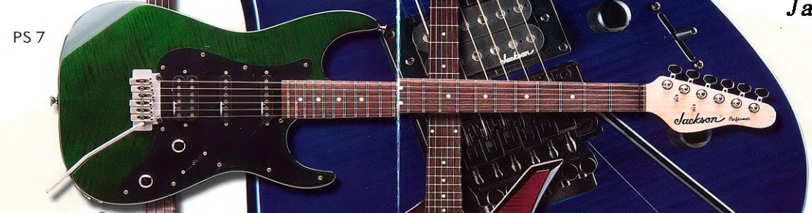
- Jackson Performer PS7 Dinky: ‘Performer’ PS-7 Dinky from the 1997 catalog to 2000. Made in Japan or Korea. Alder body, rosewood fretboard with dots, 22 frets. Soft ‘strat’ like shaped unfinished headstock and Wilkinson VS50 vintage tremolo. Jackson J135/J70 HSS pickups. Note: Some may not have 'Performer' on headstock. Finishes: black, blue, trans green, trans blue, red, burgundy

- Jackson Guitar Center 36th Anniversary Dinky DKGC36*: (Borrowed image) From 2001, possibly limited to 300. HSS Dinky MIJ. Has reverse sharkfin inlays and headstock. HSS set up with Duncan Designs. Jackson JT-580LP tremolo. Finishes: flame natural, flame lacewood red
- Jackson Guitar Center 37th Anniversary Dinky GC 37BC*: (Borrowed Image) MIJ. Has the body of a DKMG (old version with EMG HZ) but with a DK2 neck and a rare instance of MOP Jackson logo on headstock. (Neck inlays however seem to be pearloid, but I could be wrong) Finishes: black cherry
- Jackson Dinky AT-X*: (Borrowed image) HSH archtop Dinky. MIJ. Late 90s. Only sold in Europe, Australian, New Zealand, and possibly more. Poplar body, rosewood fretboard with sharkfin inlays. 24 frets. HSH Jackson pickups J-65/ J-130/j-65. JT-580LP tremolo. Black hardware. (Not to be confused with the Jackson ATX, which is an earlier 90s electric acoustic). Finishes: metallic black, trans red, trans green, trans purple, metallic blue, trans blue
- Jackson Dinky DR-X*: (Borrowed image) Uncommon HSH Dinky Reverse for Euro, Aussie, New Zealand, and more? markets. MIJ. Poplar body with maple veneer on trans finishes, rosewood fretboard with reverse sharkfin inlays. 24 frets. HSH Jackson pickups J-65/ J-130/ J-65(?. JT-580LP tremolo. Reverse headstock. Black hardware. Finishes: metallic black, trans red, trans green, trans purple, metallic blue, trans blue
- Jackson Dinky DK2 ASM V*: (Borrowed image) Seems to be a special edition MIJ. The neck pocket states "DK2SP". Early 2000s or at least 2002. Not sure of body wood. 24 frets bound rosewood fretboard with sharkfin inlays. Duncan Design HH pickups with silver covers. Vintage style tremolo. Vol, tone, three-way blade. Chrome hardware. (Known) finishes: Black, blue sparkle
- Jackson Dinky D10: AX/S Series. Predecessor to DX10 (see entry). Alder body, rosewood fretboard with offset dots. 24 frets. Jackson JE10/JE10 HH pickups. JT-480 tremolo. Finishes: black, metallic red, metallic blue
- Jackson Dinky D10 Pro: AX/S Series. Predecessor to DX10D (see entry). Like above but with reverse sharkfin inlays. Armstrong JA10N/JA10B HH pickups. JT-480 tremolo. Finishes: black, metallic red, metallic blue
- Jackson JD-R Dinky Reverse/ JT20T: (Borrowed image) Musician's Friend exclusive, often confusing some to this day. NOT part of the Pro, Professional, or JS Series. Made in Korea? Late 90s, HSS Dinky with 24 frets and dot inlays. Locking Takeuchi style tremolo. Black hardware. Reverse headstock. Note: Look for the trapazoid tuners and Ibanez like location of five-way toggle. Finishes: Black, metallic blue
- Jackson JD-R Pro Dinky Reverse/ JT20 Pro: (Borrowed image) Like above but with reverse sharkfin inlays. Despite the image and something clearly written after 'Jackson' on the headstock, I do not believe this is 'Professional' or 'Concept' Series. Finishes: Black, metallic blue
- Jackson Dinky DKDM-Q: MIJ. Musician's Friend limited DXMG with a few unique specs. Basswood body, ivoroid bound maple neck with rosewood fretboard and MOTO sharkfin inlays. 24 frets. Dimarzio Tone Zone/ Evolution HH pickups. Floyd Rose 02000 tremolo. Vol, tone, three-way switch. Reverse headstock. Included gig bag. Gold hardware. Note: Notice the nonstandard nomenclature. 'DM' apparently indicates the Dimarzios? Also unlike most MIJ Jacksons from this era, we get a real Floyd Rose, not unlike later SL3 MIJ (see entry) Finishes: Purple quilt maple
- Jackson Dinky DKDM-Q Left handed: Seen on Guitar Center's site. Same as above in left-hand option. Note: Despite what the stock image suggests, it IS supposed to have the same pickups.
- Jackson Dinky (TOM)* (Borrowed image) Related to the JD-R Pro? More info needed. Seems to have HSS pickups and a bound 24 fret rosewood fretboard with sharkfin inlays. Chrome TOM bridge. (Known) finishes: black
{kind=link}
{kind=link}
{kind=link}
{kind=link}
{kind=link}
{kind=link}
{kind=link}
Jackson King V
This is an aggressively styled guitar named after ‘King’ Robbin Crosby of Ratt. The V-shaped design spawned from a custom Jackson he’d play, a ‘Double Rhoads’ (a V guitar comprised of the ‘long’ wings of a Rhoads. This was never a regular production model). Later Dave Mustaine would be the face of this guitar among others. The King V was designed as a smaller version of the Double Rhoads to accompany more average sized players. These guitars are traditionally two humbucker designs with a tremolo, but not always. Other design specs vary as well, such as 24 or 22 frets, knob/control configurations, the fretboard, etc.
USA
-
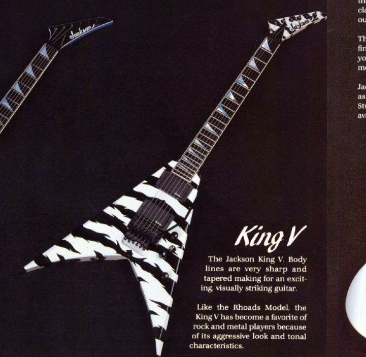
- King V Custom/ Student*: Early USA King Vs we’ll briefly touch on from 1985. The Custom would have the ebony fretboard option with biding and sharkfin inlays. Pickup and bridge could be whatever the customer chose. The Student offered a rosewood board with dots and no binding. Neck-thru designs. From the 1989 Jackson Catalog image there appears to be 22 frets, but perhaps this could be customized.
- Jackson King V (USA Player’s Choice): A USA KV1 precursor. Poplar body, quartersawn maple neck, (neck-thru), rosewood fretboard with sharkfin inlay, 22 frets. JT-390 bridge (listed spec, image in ‘94/95 catalog shows tremolo), Seymour Duncan SH-4 JB/ SH-5 Custom pickups HH. Two volume, one tone, three-way switch. Finishes: black
- Jackson KV1: USA King V from 1996-00. Poplar body (Korina for trans finish), and later Alder. Maple neck (neck-thru), bound ebony fretboard with sharkfin inlay. 24 frets. Seymour Duncan SH-4/TB-5 HH pickups. Two volume, one tone, three-way switch. Kahler 3310 bridge (Fixed), LSR machine heads. Finishes: black, black pearl, pavo purple, natural, trans black
- Jackson King V KV2: USA King V eventually replacing KV1 but starts out in 1998 as a tremolo option for the KV1. Poplar body, maple neck (neck-thru), 24 frets, Org. Floyd Rose Tremolo, Seymour Duncan SH-4/TB-5 HH pickups. Early Korina bodies for trans finishes. From 1999-2001 Alder bodies on solid finishes. From 2002- Alder bodies with maple tops for trans finishes. Finishes: black, pavo purple, natural. Later: snow white, snow white with black bevels, black ghost flames, gun metal gray, quicksilver, darby green, Acapulco gold, absinthe frost, agent orange, natural, trans black, trans green, trans red, black with gold pinstripes, snow white with black pinstripes, blue ghost flames, sliver with black dragon, bolted steel, lightning sky, copper snakeskin, Graphics: nebula, graveyard, pile o’ skulls, yellow bengal, eerie dess swirl, shatter glass. Other: Ferrari red with black bevels, burnt cherry sunburst, cobalt blue, deep candy red
- Jackson KV2T: USA shortscale King V. Mahogany body and three piece neck (neck-thru), ebony fretboard with sharkeye pearl inlay, JT390 string-thru body bridge, and AT-1 headstock. Seymour Duncan 59/JB HH pickups. 24.75 scale length, 22 frets. Sperzel tuning machines. Note: A special 1 of 12 run by Mike Shannon are 25.5 scale length. Finishes: absinthe frost, snow white metallic black, black, acapulco gold, darby green, quicksilver, silver with black dragon, copper snakeskin, black ghost flames
{kind=link}
{kind=link}
{kind=link}
Pro Series:
- Jackson KV3: Mid range MIJ import King V from 1998-00 replacing KV2(MIJ). Poplar body, maple bolt-on neck, rosewood fretboard with sharkfin inlay. 22 frets, JT-580 LP tremolo. Duncan Design DD102N/DD102B HH pickups. Finishes: black, deep metallic violet, ‘SWP’, midnight blue sparkle, trans blue, trans red, cherry sunburst
- Jackson KV4: Higher end MIJ import King V from ’00. Alder body (flame maple veneer), maple neck (neck-thru) rosewood fretboard with sharkfins. 24 frets. JT-580LP tremolo, Seymour Duncan TB4/SH4 HH pickups. Chrome hardware. Vol, tone, three-way toggle. Finishes: black, platinum, amber sunburst, natural, trans blue, trans red, violin brown
- Jackson KV5FR King V: ‘Pro Series’ MIJ. Alder body, maple neck (neck-thru) rosewood fretboard with 24 frets and sharkfin inlay. Seymour Duncan JB/Jazz HH pickups. Floyd Rose FRT-O2000 tremolo. Black hardware. Finishes: black, black with green pinstripes, snow white with black bevels, bolted steel

- Jackson King V KV: 'Pro Series' Mahogany body, three piece maple neck, ebony fretboard (neck-thru) with alumiloid sharkfin inlays. 24 frets. Seymour Duncan Distortion pickups (direct mount), Floyd Rose 1000(?) tremolo. Black nickle hardware. Finishes: Metallic black
- Jackson King V KVT: 'Pro Series' 2014-. King V with TOM. Alder body, maple neck (neck-thru), bound ebony fretboard with alumiloid sharkfin inlays. 24 frets. Seymour Duncan Distortion direct mount HH pickups. TOM bridge, string thru body. Black nickle hardware. Vol, tone, three-way toggle. Finishes: Gloss black 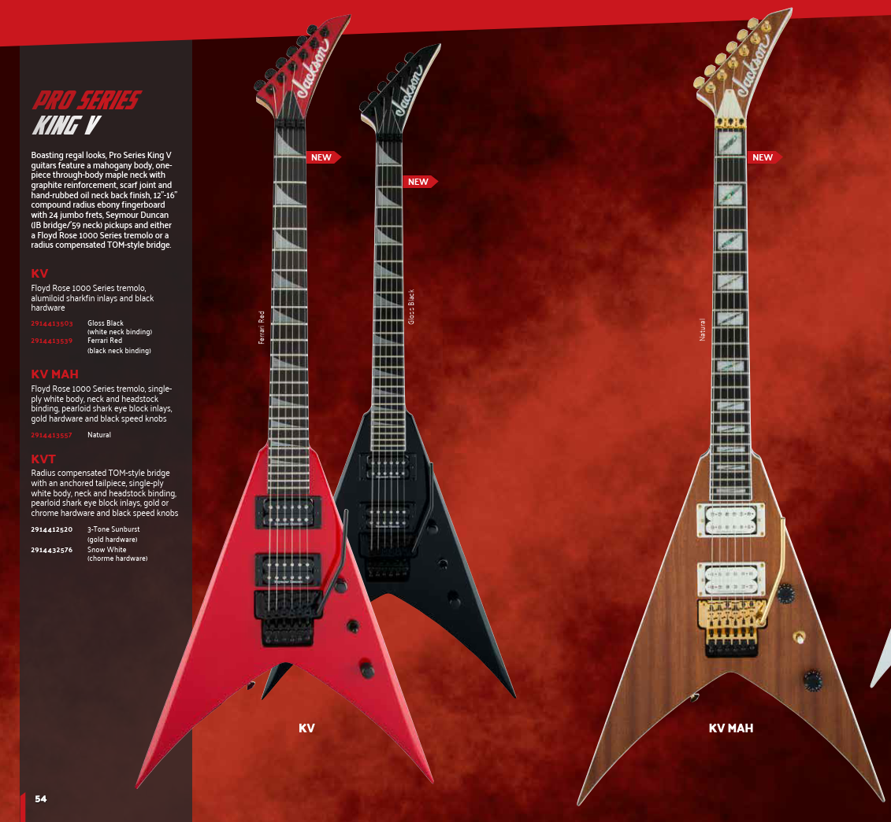
- King V KV (later): Mahogany body, maple neck (neck-thru), bound ebony fretboard with alumiloid sharkfin inlays. 24 frets. Seymour Duncan JB/'59 HH pickups. (With rings this time) Floyd Rose 1000. Black hardware. Headstock matches finish. Finishes: Gloss black (white binding), Ferrari red (black binding)
- King V KV MAH: Like above but with a pearloid shark eye block inlays and gold hardware. White pickups. Black speed knobs. Finishes: Natural
- Jackson King V KVT (later): ‘Pro series’ King V. Made in Indonesia. Mahogany body, maple neck (neck-thru), ebony fretboard with shark-eye block inlay. Jackson TOM style bridge (not string-thru body), Seymour Duncan TB-4/SH-1N HH pickups, locking tuning machines. Finishes: 3-tone sunburst, snow white
- KVQ: 4A Quilt top option of above. Alder body, otherwise same. Finishes: trans amber
- KVTQ: Quilt top option of KVT. Finishes: trans red
- Jackson Pro Series King V Two-Face: 'Pro Series' King V like above but different two tone aesthetic. Pearloid sharkfins. Black and white Seymour Duncan Distortion HH pickups. Black hardware. Dunlop strap buttons. Otherwise same. Finishes: Black and white
{kind=link}
{kind=link}
{kind=link}
{kind=link}
- Jackson King V KVTMG: ‘Pro Series’ King V with EMGs. 2021. Mahogany body, maple neck (neck-thru) with bound ebony fretboard. Pearloid sharkfin inlays. 22 frets. EMG 81/85 HH pickups. Jackson TOM bridge with anchored tailpiece. Chrome hardware. Dunlop strap locks. Vol, tone, three-way toggle. Headstock matches finish. Finishes: snow white
- Jackson King V KVMG: ‘Pro Series’ King V. Alder body, three-piece maple neck (neck-thru), ebony fretboard with alumiloid sharkfin inlay, 24 frets, EMG 81/85 HH pickups. Floyd Rose tremolo. Finishes: snow white with black bevels, black
- KVMGQ: Quilt maple top option of above. Finishes: trans amber sunburst, trans black
{kind=link}
Concept Series
- Jackson Concept Series King V KV24MG:2021 Peach Guitars and Musician Friend exclusive. Made in Korea. Alder body with five piece maple/wenge neck. Bound ebony fretboard with sharkfin inlays. 24 frets. EMG 81/85 HH pickups (direct mount). Floyd Rose Org. tremolo. Luminlay side dots. Black hardware. Includes Jackson foam core hard case. Finishes: Gloss black

X Series
- Jackson KVX10: ‘X series’ King V, 2000 to at least 2010. MIJ. (Note in 2001 catalog called 'KVX') Alder or Poplar or basswood body with flame maple top optional. Bolt-on maple neck with rosewood fretboard and white sharkfin inlays. 24 frets. Duncan Designed 103B/103B HH pickups. JT-390 string-thru body bridge until 2006, then JT-500 tremolo. Finishes: black, deep metallic red, dark metallic blue , magenta, trans red, trans blue, tobacco sunburst, amber sunburst, cobalt blue swirl, black with blue flames (American music supply exclusive)
- Jackson KVXT: ‘X Series’ King V, replaces KVX10. Basswood body, maple neck (neck-thru), 24 frets, rosewood fretboard with sharkfins. EMG HZ H4-B/H4-AN HH pickups. TonePros string thru-body bridge. Made in India. Finishes: burnt cherry sunburst, black, quicksilver, black with blood red bevels
- Jackson KVXMG: ‘X Series’ King V. Made in Indonesia. Basswood body (later poplar), maple neck (neck-thru), 24 frets, rosewood (later laurel) fretboard with pearloid sharkfins. EMG 85/81 Hh pickups. Floyd Rose Special tremolo. Made in India. Finishes: black, kawasabi green, snow white, (later) slime green with black bevels, satin black
- Jackson King V KVX: ‘X Series’ King V. Made in Indonesia. Basswood body. Maple neck (neck-thru), rosewood fretboard with 24 frets, pearloid sharkfin inlays. Floyd Rose Special. Jackson high-output pickups HH. Finishes: black with white bevels, snow white
- Jackson King V KVX-MG7: ‘X Series’ seven string King V with EMGs. 2021. Poplar body with maple neck (neck-thru). Bound laurel fretboard with pearloid sharkfin inlays. 24 frets. EMG 81-7 HH pickups. Flory Rose Special tremolo. Vol, tone, three-way toggle. Black hardware. Finishes: satin black with primer gray bevels
{kind=link}
{kind=link}
Professional Series
- Jackson KV2: ‘Professional’ series King V. Poplar body, maple bolt-on neck. Rosewood fretboard with dots, 22 frets, JT-580 tremolo. Jackson JA-214/JA-213 HH pickups. One vol, one tone, three-way switch. Finishes: black, ultra violet
- Jackson King V STD: Mid ranged ‘Professional’ King V. ’93-95. Poplar body, bolt-on neck, rosewood fretboard with pearl dots, 22 frets. J-92C/ J-50N HH pickups, Takeuchi JT-580 tremolo. One vol, three-way switch. Became the KV2 (see entry). Finishes: black, candy blue, bright red, snow white
{kind=link}
JS Series
- Jackson King V JS30KV: Older ‘JS Series’ King V from 2005-09. Made in India. Indian Cedro body, maple bolt-on neck, 24 frets, Indian rosewood fretboard with dot inlays. Jackson CVR 2b/2n HH pickups. JT-390 string-thru body bridge. Silver hardware. Finishes: black, deep metallic blue, inferno red, snow white, gun metal gray, trans blue
- Jackson King V JS32: Later ‘JS Series’ King V. Made in India. Indian Cedro, basswood, or poplar body depending on year. Bolt-on maple neck, rosewood? (later amaranth) fretboard, also bound (since 2013) with 24 frets and pearloid sharkfin inlays. Jackson CVR-2b/2n or JE-10 HH pickups. JT-390 string-thru body bridge. Chrome or black hardware. Finishes: black, gun metal gray, inferno red, black with white bevels, white with black bevels, matte army drab

- Jackson King V JS32T: TOM option of above. JT-390 bridge. Same specs otherwise including changes over the years. Finishes: black, gun metal gray, snow white, inferno red, gloss black, ivory, Ferrari red
- Jackson King V Shuriken: Guitar Center exclusive King V. Made in India. Indian cedro body. Maple bolt-on neck with bound rosewood fretboard and shuriken inlays. 24 frets. Jackson CVR HH pickups. Jt-580(?) tremolo. Vol, tone, three-way toggle. Black hardware. Finishes: quicksilver with black bevels
{kind=link}
Signature King Vs
- Jackson King V Pro- Mustaine: ‘Professional’ Series King V that recreates his custom shop Jackson. Poplar body with maple neck (neck-thru). Bound ebony fretboard with pearl sharkfin inlays. 24 frets. Kahler 3300 bridge (fixed) and, Jackson J-92C/ Bill Lawrence L-500XL HH pickup. Two volume, one tone, three-way switch. Note: See Grover Jackson entries for other version(s) of his signature. Finishes: black, sparkle silver metallic, cherry sunburst
- Jackson Y2KV: Artist signature King V of Dave Mustaine. '00-02. USA. Mahogany body, mahogany neck (neck-thru), bound ebony fretboard with pearl sharkfin inlay, 24 frets, JT-390 string thru body bridge, Seymour Duncan TV4/SH4 HH pickups, vol, vol, tone, three-way toggle. Finishes: all USA select
- Phil Demmel Pro King V: Signature guitar of Machine Head guitar player. Made in Japan, or Indonesia (from 2011-) Alder body, quartersawn maple neck (neck-thru), ebony fretboard with pearl sharkfin inlay or alumiloid piranha (2016-). Floyd Rose FRT O200 tremolo, EMG 81/60 HH pickups. Finishes: red with black bevels, white with black bevels, black with silver bevels, gold with black bevels, black with white dots, red tide fade, black tide fade
- Phil Demmel Sig. King V PDX-2: Earlier ‘X-series’ sig. Alder body, maple bolt-on neck, pearloid sharkfin inlay, 24 frets, EMG HZ HH pickups, JT-580LP tremolo. Made in India. Finishes: red with black bevels, black with silver bevels
- Demmelition King V PDX: Import sig. ‘X-series’. Alder or Nato(2016-) body, rosewood fretboard with MOTO sharkfin inlay, 24 frets. Jackson JT-580LP tremolo, EMG HZ pickups. Finishes: red with black bevels, black with silver bevels
- Demmelition PDXT: TOM bridge option of above.
- PDX-2 Demmelition King V: Later ‘X series’ sig. Made in Indonesia. Alder body, bound three piece maple neck (neck-thru), rosewood fretboard with pearloid sharkfin inlay, EMG HZ H4-B/H4-A HH pickups, Floyd Rose Special. Finishes: red with black bevels, black with silver bevels
- Scott Ian King V KVT: USA signature of Anthrax guitarist. Mahogany body, maple neck (neck-thru), ivoroid bound rosewood fretboard with pearl block inlay, 22 frets, 24.75 scale length, Seymour Duncan TB-4/SH-1N HH pickups, Tonepros T3BT-B TOM bridge and Gotoh stop tailpiece (no string-thru). Gotoh tuning machines. White pickguard. Finishes: ivory
- Scott Ian King V KVXT: ‘X series’ import of above. Made in Indonesia. Mahogany body, maple neck (neck-thru) bound laurel fretboard with pearloid block inlay. 22 frets, 24.75 scale length. Duncan Design HB-103B/103N HH pickups, JT-390 bridge with tailpiece (not string-thru body). White or mirror pickguard. Signature on truss rod cover. Finishes: gloss black, ivory, candy apple red
- Scott Ian King V "Baldini" X Series
{kind=link}
{kind=link}
{kind=link}
{kind=link}
{kind=link}
{kind=link}
{kind=link}
{kind=link}
Other
- Jackson 25 Anniversary Double Rhoads King V Custom Shop: Limited to 25, of the old double Rhoads body style. The instrument is hand-signed by Jackson Custom Shop Senior Master Builder Mike Shannon and Jackson Production Manager Tim Wilson. Three piece poplar body, maple neck (neck-thru). Ivoroid Bound ebony fretboard with pearl sharkfin inlays. 22 frets. Seymour Duncan TB-4/Jazz HH pickups. Floyd Rose Org tremolo. Vol, vol, tone, three-way toggle. Black hardware. Included hard case. Finishes: Mercedes silver
- Jackson King V Elite Limited Edition: MIJ limited edition King V with premium features from around 2011-12. Alder body, maple neck (neck-thru) with bound ebony fretboard. 24 frets. Alumiloid sharkfin inlays. Seymour Duncan JB/Jazz pickups with chrome pickup rings. Org. Floyd Rose (chrome). Vol, vol?, mid-boost, three-way switch controls. Chrome Jackson logo and 'Elite' truss rod cover. Dunlop strap locks. Chrome hardware. Included hard shell case. Headstock matches finish. Finishes: absynthe frost, quick silver, amber sunburst, trans black. Fun fact: The alumiloid inlay look some later Indonesia Pro Series got took cues from this series.
{kind=link}
{kind=link}
Jackson Kelly
An aggressive vaguely Explorer shaped guitar named after Bradford Kelly of Heaven in the early 80s (more specifically a ‘Special Explorer’ which had a larger ‘King Kelly’ body size than modern Kelly guitars). Since then many other players like Marty Friedman have made it a Jackson family mainstay. Kelly guitars usually have a typical Jackson neck, two humbucker pickups, a locking tremolo, 24 frets, and a neck-thru or bolt-on neck. That is not always however, there 22 fret versions with accordingly altered body dimensions and of course the three different body sizes overall. (See additional references at bottom) Kelly Basses will also be included here.
USA
- Jackson Kelly KE1: A Marty Friedman signature USA Kelly from 1996. Poplar body until ’00 where its Alder body, optional quilt maple top. Quartersawn maple neck (neck-thru), bound ebony fretboard, 24 frets, pearl sharkfin inlays, single Seymour Duncan TB-4 bridge pickup. Kahler AMP3310 bridge. One volume knob. Finishes: black, snow white pearl, trans black, trans blue
- KE1T: String-thru body option KE1 from 2000. Same specs but with JT-390 bridge. Alder body. Finishes: black, snow white pearl, trans black
- KE1F: Org. Floyd Rose option KE1 from 1997. Poplar body. Finishes: black, snow white pearl, trans black
- Jackson Kelly KE2: Modern USA production Kelly. Alder body, maple flame top optimal, male neck (neck-thru), bound ebony fretboard, pearl sharkfin, 24 frets, Seymour Duncan TB-4/SH-2N HH pickups. Org. Floyd Rose. Silver or black hardware. Finishes: black, metallic black, snow white, quicksilver, darby green, Acapulco gold, absinthe frost, agent orange, trans black, trans green, black and gold pinstripes, Ferrari red with black bevels, snow white with black pinstripes, black ghost flames, eerie dess swirl, lightning sky, copper snakeskin, yellow Bengal, and more..
- KE2T: Early 00s JT-390 TOM bridge option for above. Finishes: trans amber, and all other US select finishes..
{kind=link}
Pro Series.
- Jackson Kelly KE3: Higher end import Kelly. MIJ. Initially ‘Professional’ series. Poplar then Alder (’00-) body, optional quilt maple veneer, maple bolt-on neck (no back plate for older), rosewood fretboard, 24 frets, sharkfin (reversed on pre ’00 models) inlays, Takeuchi JT-580LP tremolo, Duncan Design 103N/102N HH pickups. Silver (early) or black hardware. Finishes: black, deep metallic violet, trans violet, trans black, trans blue, deep candy blue, trans red, midnight blue sparkle, eerie dess swirl, crimson swirl, skulls, white with black pinstripes, trans green, pile o’ skulls 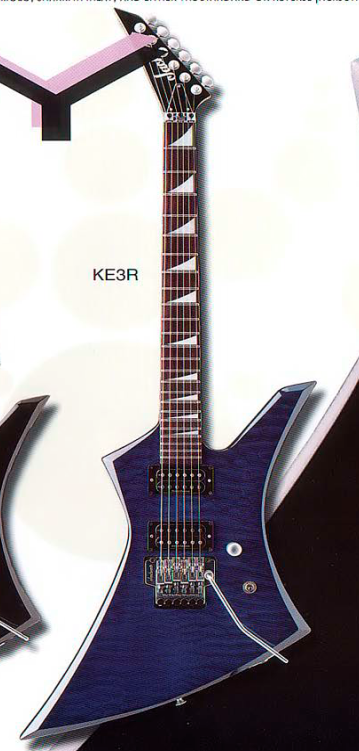
- KE3R: Reverse headstock KE3 from ’98-’00. MIJ. Same specs otherwise. Satin hardware. Finishes: black, midnight blue sparkle, trans blue, trans red, deep candy blue
- Jackson Kelly KE4: Mid-range Kelly. ’Professional’ and later 'Pro' series. MIJ. Poplar (solid) or Ash (trans) body. Bolt-on maple neck, rosewood fretboard with dots, 24 frets, Jackson JX2/JA213 HH pickups. Chrome hardware. Takeuchi JT-580 tremolo. Finishes: black, metallic violet, graphite, cobalt blue satin
- Jackson Kelly KE5FR: Uncommon Pro Series Kelly. Alder body, maple neck (neck-thru), rosewood fretboard with sharkfin inlays. 24 frets. Seymour Duncan JB/Jazz HH pickup. Floyd Rose FRT-O2000 tremolo. Black hardware. Vol, tone, three-way toggle. Finishes: black, snow white with black bevels, black with gold pinstripes
- Jackson Kelly KE7R: Seven string Kelly from 2000 catalog. MIJ. Alder body, maple bolt-on neck, rosewood fretboard with reverse MOTO sharkfin inlay, Duncan Design HB7x2 HH pickups. JT-790 String-thru body bridge. Vol, tone, three-way toggle. Chrome hardware. Finishes: black, deep candy blue
- Jackson Pro Plus XT Kelly KE HT6 Baritone:
{kind=link}
Concept Series:
- Jackson Concept Series King Kelly KE: Limited for 2024, with a production model version of a modified Kelly shape only seen in custom shop. Alder body, three-piece maple neck thru body. Ebony fretboard with sharkin inlays. Bare Knuckle Aftermath HH pickups. Floyd Rose 1000. Vol, tone, toggle. Black hardware. With Foam core case. Finishes: satin black

X Series
- Jackson Kelly KEXMG: ‘X Series’ Kelly. Made in India. Basswood body (quilt maple top optional), maple neck (neck-thru), bound rosewood fretboard with pearloid sharkfin inlay, Floyd Rose Special tremolo. 24 frets. EMG 81/85 HH pickups. Finishes: black with white bevels, trans black, gloss black, silverburst, tobacco sunburst, white with black bevels
- Jackson Kelly KEXTMG: TOM option of above. TonePros T3BT-B string thru bridge. Finishes: matte black, tobacco sunburst, ivory
- Jackson Kelly KEX: ‘X Series’ Kelly. Made in Indonesia. Basswood (later Poplar) body, maple neck (neck-thru), rosewood (later laurel) fretboard with pearloid sharkfin inlay. 24 frets. Graphite reinforcement. Floyd Rose Special tremolo. Jackson high-output pickups HH. Gold hardware. Finishes: gloss black, satin black, Ferrari Red with black bevels (2022), Lime green metallic (2024), Deep purple metallic (2024)
- KEXM: Maple fretboard version of above. Black hardware. Finishes: snow white, neon yellow
- KEXQ: Quilt maple top option of KEX. Finishes: trans green, cherry burst, transparent black burst
- Jackson Kelly KEXT: TOM bridge option with anchored tailpiece. Chrome hardware. Finishes: Gloss black
- KEXT MAH: Mahogany top option. Gold hardware. Finishes: Natural
- Jackson Kelly KX10D: 'X Series' Kelly made in India. 2000. Alder body, bolt-on (has neck-plate) maple neck with rosewood fretboard and sharkfin inlays. 24 frets. Armstrong 214/ 213 HH pickups. JT-500 tremolo. Chrome hardware. Vol, three-way switch. Finishes: black, dark metallic red, dark metallic blue
- Jackson Kelly KX10: Like above, 'X Series' Kelly in the 2000 catalog. Alder body maple bolt-on neck, rosewood fretboard. Dot inlays. Armstrong 214/213 HH pickups. JT-500 single locking tremolo. Vol, tone three-way switch. Chrome hardware. Finishes: black, dark metallic red, dark metallic blue
- Jackson Kelly KEXS: ‘X Series’ Kelly with special finish. 2021. Made in China. Mahogany body, maple neck (neck-thru). Bound laurel fretboard with pearloid sharkfin inlays. 24 frets. Jackson high-output HH pickups. Floyd Rose Special tremolo. Vol, tone, three-way toggle. Black hardware. Finishes: shattered mirror
{kind=link}
{kind=link}
{kind=link}
{kind=link}
{kind=link}
Professional Series.
- Jackson Kelly Pro Professional: ‘Professional’ high end Kelly from ’94-95. Poplar body, quartersawn bound maple neck (neck-thru), ebony fretboard with pearl sharkfin inlay, 24 frets, Schaller JT-590 tremolo. Jackson J-92C/J-50 HH pickups. Finishes: black, black cherry metallic, sparkle green metallic
- Jackson Kelly Professional XL: ‘Professional’ upper mid ranged Kelly from ’94-95. Poplar body, bolt-on maple neck, 24 frets, bound rosewood fretboard with pearl sharkfin inlay. Takeuchi JT-580 tremolo, Jackson J-92C/J-50 HH pickups. Finishes: black, deep metallic violet, deep metallic blue
- Jackson Kelly Professional STD: Mid range ‘Professional’ Kelly that interestingly predates the higher end ones.Poplar body, Bolton maple neck. Rosewood fretboard with dots. 24 frets. JT-580LP tremolo. Jackson J-50N/J-92C HH pickups. Vol, three-way toggle. Finishes: Black, deep metallic violet, deep metallic blue, deep metallic red
- Jackson Kelly Professional XLR*: (Borrowed image) Not in catalogs. Professional XL Kelly with reverse headstock and sharkfins. (Not unlike the early KE3) Does NOT have a back plate, like the Kelly STD. (Known) Finishes: metallic green, metallic purple, metallic black 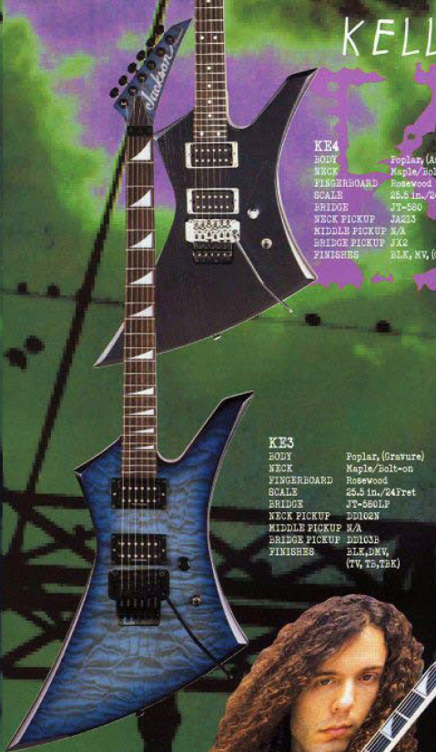
- Jackson Kelly KE3: See entry under 'Pro Series'.
- Jackson Kelly KE4: See entry under 'Pro Series'.
- Jackson Kelly Professional Bass KB1: Poplar body, maple bolt-on neck. Rosewood fretboard with dots. 2 frets. Jackson J-20/J-150VS P-J, JB-340 bridge, black hardware. Vol, blend, tone. Finishes: black, CBL
{kind=link}
{kind=link}
{kind=link}
Basses
- Kelly Bass KB-1: Or just ‘Kelly Bass’ initially ‘Professional’ series, though the logo disappears after ‘98. Poplar body, quartersawn maple neck, 22 frets, rosewood fretboard with dots, Duncan Design PB102/JB102B pickups. Chrome hardware. Finishes: black, cobalt blue, midnight blue sparkle
- Kelly Bass KBX: Renamed Kelly KB-1 from 2001 but X-Series and Made in India. Same later specs except has shark fin inlays. Vol/blend/tone controls.
- Kelly Bass KBX (2002): ‘X Series’ KBX from 2002 with an electronics revision. MIJ? Alder body, bolt-on maple neck, rosewood fretboard with sharkfin inlay. 22 frets. J-340(?) bridge. Vol, blend, bass, mid, treble, slap, Duncan Design BEQ3 preamp. Duncan Design SB103B/SB102 soapbar pickups. Chrome hardware. Finishes: black, deep candy blue, eerie dess swirl, trans red, trans blue, trans black
{kind=link}
JS Series
- Jackson Kelly JS30KE: Early ‘JS Series’ Kelly. Made in India. Indian Cedro body, bolt-on maple neck, rosewood fretboard with dots, 24 frets, Jackson CVR-2b/CVR-2n HH pickups. Jackson JT-390 string-thru body bridge. Finishes: black, deep metallic blue, inferno red, snow white

- Jackson Kelly JS32: Later ‘JS Series’ Kelly. Made in India or China (later). Indian Cedro (’11-12), basswood (’13-15), or poplar body. Bolt on maple neck (bound since ’13). Rosewood, later amaranth fretboard with pearloid sharkfin inlay, 24 frets. Jackson CVR-2/CVR-2 or Jackson JE-10/JE-10 HH (later) pickups. Chrome or black hardware. Jackson licensed Floyd. Finishes: black, gun metal gray, snow white, satin black, gloss black, quicksilver, Ferrari red
- Jackson Kelly JS32T: TOM version of above from 2010. Same specs including changes except Jackson JT-390 string-thru body bridge. Finishes: black, gun metal gray, snow white, inferno red, satin black, gloss white, viola burst
{kind=link}
Signature Kellys
- USA Signature Jeff Loomis Kelly: Arch Enemy guitarist sig Kelly. Ash body, quartersawn maple (neck-thru), bound ebony fretboard with MOP sharkfin inlay. 24 frets. Stainless steel frets, Floyd Rose 1500 tremolo, Seymour Duncan Blackout (sig.) HH pickups, Sperzel tuners, black hardware. Finishes: black (sandblasted ash top)
- Pro Series Jeff Loomis Kelly: ‘Pro Series’ sig Kelly. Basswood body (ash top), maple neck (neck-thru), graphite reinforced, bound ebony fretboard with pearloid sharkfin inlay, 24 frets. Seymour Duncan blackout (sig.) HH pickups. Luminlay side dots, Floyd Rose 1500 tremolo. One vol, three-way toggle. Finishes: black
- Limited Edition Pro Series Signature Jeff Loomis Kelly HT6 Ash: 2023. A hardtail version of the above, also made in Korea. Basswood body with 'sandblasted ash top'. Maple neck-thru body. Signature Jeff Loomis black out Seymour Duncan HH. Direct mount. Hipshot hardtail. Luminlay side dots. Vol, toggle. Black chrome hardware. Finishes:
- Pro Series Signature Brandon Ellis Kelly: 2021. Sig of Black Dahlia Murder guitarist. Poplar body, maple neck (neck-thru). Ebony fretboard with reverse pearloid sharkfin inlays. Seymour Duncan Parallel Axis bridge pickup only. Floyd Rose 1000 tremolo. Vol only. Black hardware. Dunlop strap lock. Reverse headstock. Finishes: green crackle
{kind=link}
{kind=link}
{kind=link}
{kind=link}
Other
- Kelly Pro Series neck-thru* A MIJ neck-thru Kelly. (Borrowed image) Unknown year. Unknown body wood with flame maple top. Similar to KE5FR but TOM string-thru body. Seems to have bound rosewood fretboard with pearloid sharkin inlays. Two humbuckers (image has aftermarket?). Vol, tone, toggle. Chrome hardware. (Known) finishes: trans red
- Jackson Kelly Performer PS6: (Borrowed image) 'Performer' PS-6 Kelly NOT shown in catalogs. Same Poplar body(?) with maple neck and dot rosewood fretboard. 22 frets. Has a TOM bridge with a rarely seen stop piece. Two Jackson humbuckers. Chrome hardware. Single vol and three-way toggle. Has a neck plate like other. Note: Since all I've seen have the far part dots, likely all Korean. Known finishes: dark metallic green, trans red
- Jackson Kelly Performer PS6t: ‘Performer’ Kelly. Sometimes PS-6T. Poplar body. Maple bolt-on neck, rosewood fretboard with dots, 24 frets, JT-500 tremolo. J170/J70 HH pickups. Note: These usually have the far dots, so Korean but I've seen a few MIJ too. Finishes: black, dark metallic green, red violet metallic, black cherry, deep metallic violet, trans blue
- Jackson Kelly K10: AX/S Series. Predecessor to KX10. (see entry) Alder body, maple bolt-on neck. Rosewood fretboard with dots. 24 frets. Jackson JE10/JE10 HH pickups. JT-480 tremolo. Chrome hardware. Finishes: Black, Metallic red, Metallic Blue
- Jackson Kelly K10 Pro: AX/S Series. Predecessor to KX10D. Like above but with sharkfin inlays. Armstrong JA10N/JA10B HH pickups. JT-480 tremolo. Finishes: black, metallic red, metallic blue
- Jackson Kelly JK-20 or JK20 Pro*: (Borrowed images) Made in India Kelly.
May be the same model as K10 Pro.Seems to be a budget Kelly, Musician's Friend exclusive. Looks like a KE3. Maple bolt-on neck and rosewood fretboard with sharkfin inlays. 22 frets. (Unusual for Kelly) or maybe 24 frets. (Variants?) Two Armstrong(?) humbuckers. One vol, three-way toggle. Locking JT-500 or JT-480 tremolo. (See Jackson Extra page for difference) Black hardware. Finishes: black, more? More pics. Bridge. Neck plate. - Jackson Kelly KE-X*: (Borrowed image) A Euro, Aussie, and New Zealand only market Kelly that seems to look like early KE3R. 1998ish MIJ. Poplar body with flame maple options. A contemporary of the Dinky AT-X and DR-X and Rhoads RR-X. Bolt-on neck, 24 frets, rosewood fretboard with reverse sharkfin inlays. Jackson J-65 HH pickups. JT580lp tremolo. Black hardware. Vol, three-way toggle. (Known) finishes: metallic black, metallic blue, trans blue, trans purple, trans red
- Jackson Custom Shop Limited Edition 25th Anniversary King Kelly (USA)*: Limited to 25 from 2005, these are larger King Kelly models with special body cut outs. Signed by Mike Shannon. Poplar? body, maple neck (neck-thru) with bound ebony fretboard and pearl sharkfin inlays. 22 frets. Two Seymour Duncan humbuckers (what?). Schaller 456 fixed bridge. Vol, three-way toggle. Black hardware. Included hard case. Finishes: Black with white pinstripes
{kind=link}
{kind=link}
{kind=link}
.jpg){kind=link}
.jpg){kind=link}
{kind=link}
Jackson Warrior
An X shaped guitar with each point resembling a Jackson headstock. Introduced late 1989 and designed by Mikey Wright, a Jackson R&D, the shape was discontinued (and apparently unpopular) a year later after the USA and Professional models. In 2001 however, it was reissued and continued to be a brutal design earning its namesake. Usual specs include 24 frets, fast Jackson neck, a tremolo, and two humbucking pickups. Unique to the initial models, the USA and Pro are the 24.75 scale and have three slanted in reverse rail pickups. See Links section for more history.
USA
-
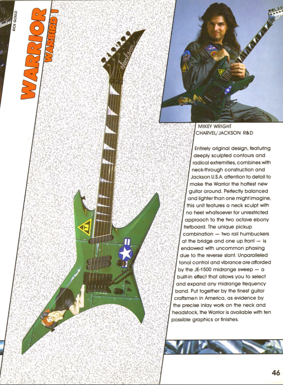
- Jackson Warrior: USA Warrior, pre WR1. ‘Deep sculpted contours and radical extremities’. Poplar body, quartersawn maple neck (neck-thru), bound ebony fretboard with MOP sharkfin inlay (plus headstock logo). 24.75 scale, 24 frets. Jackson J-200R/J-200R/J-200R H+HH pickups. One vol, one tone, JE-1500 parametric med sweep control. Schaller JT-590 tremolo. Note: same specs as Pro? Finishes: lightning sky, California sunset, bikini beach, snakeskin, bolted steel, warbird, don’t smoke, deco dream, Saturn, jigsaw, metallic black, eerie dess swirl, candy red, pearl white, midnight black, pearl yellow, Ferrari red, snow white, fire crackle, tie die, metallic electric blue, agent orange, black ghost flames, trans green
- Jackson Warrior WR1: Modern USA Warrior. ‘USA Select’. Alder body, quartersawn maple neck (neck-thru), ebony fretboard with MOP inlays, 24 frets. Seymour Duncan invader/full shred HH pickups. Org. Floyd Rose tremolos. Finishes: black, snow white, trans black, bolted steel, darby green, gun metal gray, absinthe frost, quicksilver, Acapulco gold, snow white with black pinstripes, copper snakeskin, nebula
Pro Series

- Jackson Pro Plus XT Warrior WR HT6 Baritone: A six string baritone Warrior with a few other tricks too. 2024. Made in Indonesia. Arched nyatoh body with three-piece maple neck, neck-thru. 27" scale. Luminlay side dots, heel truss rod adjust. Ebony fretboard with black sharkfin inlays. Stainless steel frets. Seymour Duncan Nazgul/Sentient HH pickups. Toggle, volume, 'arcade style kill switch'. HT6 hardtail bridge. Black hardware. Reverse headstock. W/ gig bag. Finishes: satin black.
MG Series
- Jackson Warrior WRMG: ‘MG Series’ Warrior. MIJ. Basswood (’02) or Alder body (flame maple top option), bolt-on maple neck, bound rosewood fretboard with piranha inlay, EMG HZ with turbocharger (early) or EMG 81/85 HH pickups, Jackson JT-580LP tremolo. Three-way switch (old model), three-way toggle (new model) Finishes: black, trans black, cobalt blue, black forest
X Series
- Jackson Warrior WRXT: ‘X Series’ Warrior from ’01-11. Org. called 'Warrior XT'. MIJ except possibly debut year. Alder (’01-’06) or Basswood body (maple flame veneer option), bolt-on maple neck, rosewood fretboard with white sharkfin inlay. Duncan Designed 104B/104B (’01) or Duncan Design Detonator HH pickups. Jackson JT-500 (’01) or JT-580LP tremolo. Chrome hardware. Finishes: black, dark metallic blue, deep metallic red, trans red, trans blue, cobalt blue, metallic black, trans black, inferno red
- Jackson Warrior WRXMG: Later ‘X Series’ Warrior from 2012-. Made in India. Basswood body, maple neck (neck-thru), bound rosewood fretboard with pearloid sharkfin inlay. Reverse headstock. EMG 81/85 HH pickups, Floyd Rose Special. Finishes: black, quicksilver with black bevels, matte army drab
- Jackson Warrior WRXTMG: An unusual hardtail ‘X Series’ Warrior from 2012-13. Made in India. Basswood body, maple neck (neck-thru), bound rosewood fretboard with pearloid sharkfin inlay. Reverse headstock. EMG 81/85 HH pickups, TOM string-thru body bridge. Finishes: black, quicksilver with black bevels
- Jackson Warrior WRX24: Modern ‘X Series’ Warrior that has gotten some predictable changes over the years. Made in Indonesia. Mahogany (later poplar) body, maple neck (neck-thru), bound rosewood (later laurel) fretboard with pearloid sharkfin inlay. Duncan Design HB-103 or Jackson high-output (later) HH pickups, Floyd Rose Special. Gold hardware. Finishes: natural, gloss black (has white pickups), satin black (2022) Note: Odd to add suffix '24' since Warriors always have that..
- WRX24M: Made in Indonesia. Maple fretboard and reverse headstock version of above. Poplar body, and Jackson High-output pickups. Black hardware. Otherwise same. Finishes: snow white, Ferrari red
{kind=link}
{kind=link}
Professional Series
- Jackson Warrior Pro: ‘Professional’ Warrior. Poplar body, quartersawn maple neck (neck-thru), bound ebony fretboard with MOP sharkfin inlay (also Jackson logo). 24.75 scale(?), 24 frets. Jackson J-200R/J-200R/J-200R H+HH pickups OR Reflex Silver series. One vol, one tone, JE-1500 parametric med sweep control. Schaller JT-590 tremolo. Finishes: Snow white pearl, Ferrari red, candy blue, midnight black, pearl yellow
JS Series
- Jackson Warrior JS30WR: Early ‘JS Series’ Warrior. Made in India. Indian Cedro body, bolt-on maple neck, Indian rosewood fretboard with dots, JT-390 string-thru body bridge. Jackson CVR-2b/CVR-2n HH pickups. Finishes: black, deep metallic blue, inferno red, gun metal gray
- Jackson Warrior JS32: Later ‘JS Series’ Warrior. Made in India. Indian Cedro (’11), basswood (’13) or poplar (’16-) body. Bolt on maple neck, bound (-’13) rosewood fretboard with pearloid sharkfin inlay. Jackson CVR-2 HH or Jackson JE-10 HH pickups. Black or chrome hardware. Jackson licensed Floyd Rose tremolo. Finishes: black, satin gray, satin black, snow white, black with white bevels
- Jackson Warrior JS32T: TOM option of above. Same specs with yearly changes except JT-390 string-thru body bridge. Finishes: black, gun metal gray, Ferrari red, white with black bevels, natural oil (Nato body)
Signature Warriors
- Pro Series Dave Davidson Warrior WR7/ MAH: Seven string Warrior and sig of Revocation guitar player. Made in Indonesia. Mahogany body with ash top, maple neck (neck-thru) with graphite reinforcement. Ebony fretboard with pearloid piranha inlay, Dimarzio Imperium pickups HH (sig.), Floyd Rose 1000 tremolo. Push/ pull pot. Black hardware. Headstock matches finish. Finishes: Distressed ash, walnut satin
- Jackson Warrior Dave Davidson WR7 Warrior* (2025): 2025 update (not sure if two different model names yet). Made in Indonesia. Nyatoh body, one piece maple neck. Maple or rosewood fretboard with piranha inlays. Dimarzio Occult HH pickups. Vol, tone, toggle. Floyd Rose 1000. Black hardware. Reverse headstock on Red. Headstock matches finish. Finishes: Ferrari red, yellow
{kind=link}
Jackson Concert Bass
A four string bass Jackson offered at least as early as 1984. The classic Concert Bass is a four string 34 inch scale neck-thru or bolt-on bass with 21 frets using a p-bass (J-20) neck pickup and a jazz single coil (J-150) or humbucking (varied) bridge pickup along with the J-2000 Bass preamp later. It has the ‘custom’ and ‘student’ options as did many classic custom shop Jacksons. During the 90s the Concert bass had three ‘Professional’ series variants and a ‘Performer’. In 1998 the line was drastically redesigned into several four and five string variants, passive and active. In 2002 it received another redesign as the CMG Concert bass and finally in 2012 using a similar look to the previous the current JS and X Series Concert basses.
USA
- Jackson Concert (80’s custom shop): Poplar body, neck-thru or bolt on maple neck. Ebony or rosewood fretboard with pearl sharkfin or dots. Binding optional. 21 frets. Pickups and control layout varies but J-20/J-150 PJ pickups were default it seems. JB-440 bridge. JE-2000 two band preamp as option. Finishes: varied.
- Jackson Concert Bass Custom: USA production concert bass during 90s. Poplar body, quartersawn maple neck (neck-thru), bound ebony fretboard with MOP sharkfin inlay (also Jackson logo), 21 frets, EMG PJ pickups, JB-440 high mass bridge. Vol, vol, tone, balance controls. Finishes: lightning sky, skulls, standing woman, coral sea, electric blue, black and white dragon, flames, multi colored dragon, turquoise stone, read and blue pearl, black, eerie dess, sunset, spheres, textured red pearl, snakeskin, reclining woman, holo flake.
{kind=link}
Pro Series
- Jackson Concert Bass C4-P/ C4P: Later 90s Concert Bass from ’98-. The “P” does not indicate P-Bass as this is a Jazz bass! Poplar body, maple bolt-one neck, 24 frets, rosewood fretboard with dots, Duncan Design JB-103N/JB-103B JJ pickups. 2x2 headstock. Finishes: black, deep metallic red, deep candy blue
- C4-J Alnico: Identical but with Duncan Design JB104N/JB104B alnico pickups. Finishes: black, dark metallic red, deep candy blue, tobacco sunburst (mahogany)
- Jackson Concert Bass C4-A/ C4A: Active Concert C4 Bass. Poplar, Mahogany, or Ash body. Rosewood fretboard with dots, 24 frets, Duncan Design SB101/SB101 soapbar pickups, Armstrong PAB-20 preamp, JB-240 bridge. Finishes: black, deep candy blue, tobacco sunburst (mahogany), trans red (ash)

- Jackson Concert Bass C5-P/ C5P: Passive five string Concert Bass. Poplar body, rosewood fretboard with dots, 24 frets, Duncan Design SB101/SB101 soapbar pickups. JB-350 bridge. Finishes: black, deep candy blue, dark metallic red. Note: the 1999 catalog shows a ‘C5-P’ with normal single coils. This may be a variant. 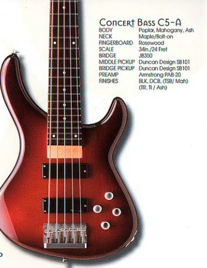
- C5-A (C5A): Active version of above with Armstrong PAB-20 preamp. Finishes: black, deep candy blue, tobacco sunburst (mahogany), trans red (ash), trans ivory (ash)
- Jackson Concert Bass C20: Lower end Concert Bass from 1999-2011! (Yes, that long.) Made in India. Indian Cedro body, rosewood fretboard with dots, 24 frets, Jackson JB100J/JN100P PJ pickups. RBB10 bridge, chrome hardware. Finishes: black, metallic blue, metallic red, inferno red, trans black, dark metallic blue, satin black, amber sunburst, tobacco sunburst, trans red, trans blue
- Jackson Concert Bass C20MJ: Four string Concert Bass from 2001 with MusicMan like pickup. Poplar body, rosewood fretboard with dots. Duncan Design MM105/ JB102N pickups. RBB10 Bridge. Chrome hardware. Finishes: black, dark metallic red, deep metallic blue
- Jackson Concert Bass C25:(borrowed image) (Specs pictured) Longer scale five string Concert Bass from 2001. 35” inch scale length. Rosewood fretboard with dots, 24 frets. RBB15 bridge. Jackson JB105J/JN105P pickups. Unsure of control layout, three knobs. Finishes: black, dark metallic red, deep metallic blue
- Jackson Concert Bass C4MJ: Active version of C20MJ. Poplar or Ash body, rosewood fretboard with dots, 24 frets, Duncan Design MM105/JB103N pickup. Vol, blend, bass, mid, treble, slap controls. Satin hardware. JB340 ‘convertible’ bridge. Finishes: black, deep candy blue, dark metallic red, trans red (ash), trans ivory(ash), burnt cherry sunburst (ash)
- C5MJ: Five string version of C4MJ. JB350 ‘convertible’ bridge. Duncan Design MM105/JB103N, same active control layout. Finishes: black, deep candy blue, dark metallic red, trans red (ash), trans ivory (ash), burnt cherry sunburst (ash)
{kind=link}
{kind=link}
{kind=link}
{kind=link}
{kind=link}
MG Series
- Jackson CMG Concert Bass: 2000s mid range Concert Bass. MG Series. MIJ. Alder body, maple neck, rosewood fretboard with sharkfin inlay, 22 frets, compound radius. EMG HZ soap bar pickups, B-30 EQ preamp. Finishes: black, black forest, trans black, cobalt blue, amber sunburst, trans green, trans red
X Series
- Jackson Concert Bass CBXNT IV (2016): ‘X Series’ Concert Bass identical to the JS version but neck-thru. Basswood body, maple neck (neck-thru), bound rosewood fretboard with pearloid sharkfin inlay, 24 frets. Jackson high-output soapbar pickups. Three band active preamp. Made in Indonesia. Finishes: metallic blue, satin black, trans red
- CBXNT V: Five string version of above. Finishes: dark metallic gray, snow white, trans black

- Jackson Concert Bass CBXNT IV: Later ‘X Series’ Concert Bass with new styling. Poplar body, maple neck (neck-thru), bound laurel fretboard with pearloid block inlay, 24 frets, Jackson PJ pickups with three band active preamp, pickguard, gold hardware. Jackson high mass bridge. Made in Indonesia: finishes: matte army drab
- Jackson Concert Bass CBXNT V: Later ‘X Series’ five string Concert Bass. 35” inch scale. Poplar body, maple neck (neck-thru), 24 frets, laurel fretboard with pearloid sharkfin inlay, high mass Jackson bridge. Jackson PJ pickups with three band active preamp. Made in Indonesia. Finishes: gloss black
- CBXNT V MAH: Mahogany top option and gold hardware. Finishes: natural
- CBXNTM IV: Maple fretboard CBXNT with black block inlay. Finishes: butterscotch, snow white
- CBXNTM V: Maple fretboard option with black sharkfin inlays. Finishes: fiesta red
- Jackson Concert Bass CBXNT DX IV: ‘X Series’ unique Concert Bass. 2021. Poplar body, maple neck (neck-thru). Bound laurel fretboard with pearloid sharkfin inlays. 24 frets. Jackson PJ pickups. Jackson Bass Bacher string-thru body bridge. Vol, blend, three-band EQ. One ply pickguard. Chrome hardware. Finishes: absynthe frost, rocket red, gloss black, ice metallic with maple fretboard ('23), matte army with roasted maple fretboard ('23)
- CBXNT DX V: 2022, five string version of above with same aesthetics. Made in Indonesia. (Only 34" scale, unlike the non-DX CBXNT V!) 1.75" nut width, otherwise same specs as above. Finishes: Gloss black, Snow white
{kind=link}
{kind=link}
{kind=link}
{kind=link}
{kind=link}
{kind=link}
Professional Series: nut 1 9/16. Thickness 1st fret 19mm, 12th 21mm.
- Jackson Concert XL: Higher end ‘Professional’ Concert Bass from 1992-95. Poplar body, bolt on maple neck, 22 frets, bound rosewood fretboard with MOP sharkfin inlay. Jackson J-150VS/J-20 PJ pickups OR Reflex silver series. Jackson JB-440 high mass bridge. Vol, balance, tone controls. Finishes: metallic black, dark metallic blue, deep metallic red, pearl white (’92-93), black cherry (’94-95).
- Jackson Concert V: High end five string Concert Bass. ‘Professional’ Series. Poplar body, bolt on maple neck, 24 frets, bound rosewood fretboard with MOP sharkfin inlay. Kahler 2350 bridge. Jackson J-155/J-25 PJ pickups. J-2500 active preamp with treble/bass. Vol/bass/treble/balance control. Finishes: dark metallic blue, metallic black(’92-93), pearl white deep, metallic red, black cherry (’94-95)

- Jackson Concert EX: Mid-range ‘Professional’ Concert Bass. Poplar body, bolt on maple neck, 22 frets, rosewood fretboard with dots. Jackson J-150VS/J-20 PJ pickups. Jackson JB-440 high mass bridge or JB-340 (from around ’94). Vol, balance, tone controls. Note: Later Concert EX feature cheaper tuning machines. Finishes: black, stone (’92-93), snow white, bright red
- Jackson Concert Bass SP: 1992 Euro market only? precursor to EX. Poplar body, rosewood board with 21 frets. J-20/J-150 PJ pickups with JB-3240 bridge. Vol, bal, tone. CHROME hardware. Note: only tell from the EX besides bridge. Finishes: CR, MB, SW, CB
{kind=link}
JS Series
-
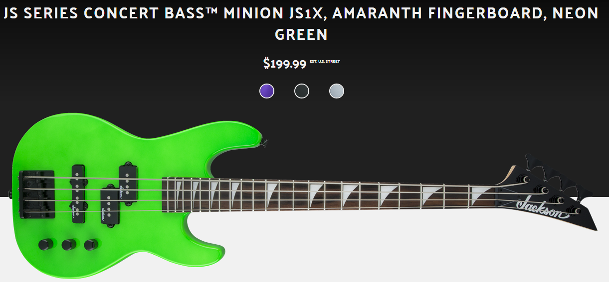
- Jackson Concert Bass JS1X Minion: Short scale Concert Bass. Poplar body, 28.6” scale neck. Rosewood (later amaranth)fretboard with pearloid sharkfin inlay. 22 frets. Jackson PJ pickups. Black hardware. Finishes: neon green, satin silver, pavo purple, satin black, metallic red (2024)
- Concert Bass JS1XM: Maple fretboard option. Finishes: snow white
- Jackson Limited Edition JS Concert Bass JS1M: Single pickup Concert Bass. 2020. Made in China. Poplar body, maple neck bolt-on neck, maple fretboard with black sharkfin inlay. 24 frets. 12" radius. Jackson P pickup. High-mass bridge. Vol, tone. Finishes: neon green, satin black, satin gray (special edition)
- Jackson Concert Bass JS2: Budget ‘JS Series’ Concert Bass from 2012-. Poplar body, rosewood (later amaranth) fretboard with pearloid sharkfin inlay, 24 frets. Jackson high-output soapbar pickups, Jackson high-mass bridge. Vol, Vol, tone. Made in India. Finishes: black, quicksilver, trans black, snow white, satin black
- Jackson Concert Bass JS3: Active ‘JS Series’ Concert Bass from 2012-. Poplar body, bound rosewood (later amaranth) fretboard with pearloid sharkfin inlay, 24 frets. Jackson high-output soapbar pickups, three band active preamp, Jackson high-mass bridge. Made in India, Indonesia, or China (?) Note: applies to the other JS Concert Basses. Finishes: black, quicksilver, trans black, metallic blue, satin black 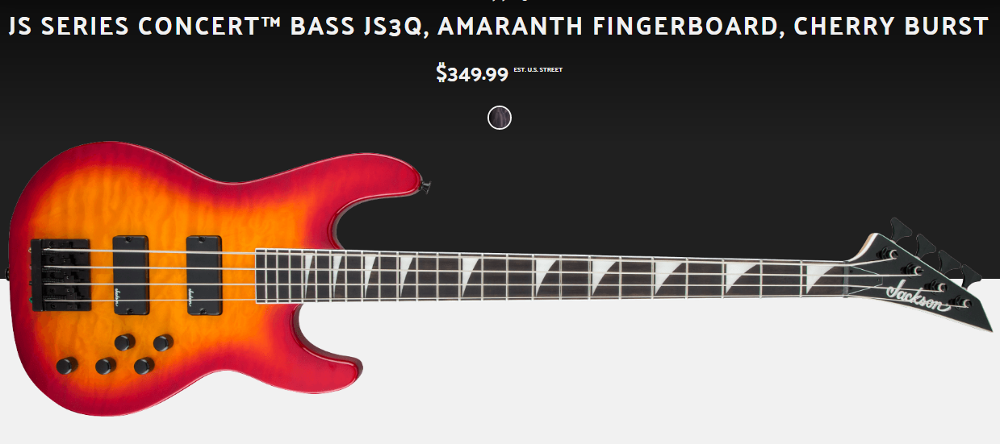
- JS3Q: Quilt top option JS3. Also called JS3QM. Finishes: trans blue, trans red, cherry burst, trans black
- JS3P: 2024 option with poplar burl top: Same later specs. Finishes: trans black burst, trans black
- Jackson Concert Bass JS3V*: Lower end five string Concert Bass. ‘JS Series’. Poplar body, bound rosewood (later amaranth) fretboard with pearloid sharkfin inlay, 24 frets. 35” or 34” scale length. Jackson high-mass bridge. Jackson high-output soapbar pickups. Three band active preamp. Made in India. Finishes: black, quicksilver, trans black, metallic blue burst
- JS3VQ: Maple top JS3V. Also called JS3VQM. Finishes: trans black, trans amber, trans red burst, trans black burst, cherry burst
{kind=link}
{kind=link}
{kind=link}
{kind=link}
{kind=link}
Signature Concert Basses
- Jackson John Campbell signature bass: Based on C20 Concert Bass. Alder body, bolt-on maple neck. Compound radius rosewood fretboard with JC inlay. EMG 35DC/ P pickup with B-35C active preamp. Badass iii bridge, black hardware. MIJ. Finishes: trans black, black, satin black
- Chris Beattie Signature bass: Based on C20 Concert Bass. Alder body, bolt-one maple neck, traditional four in a line headstock, rosewood fretboard with mace inlays, compound radius, EMG HZ soapbar pickups, EMG BEQ preamp. Black hardware. MIJ. Finishes: satin black, black
- Pro Series Chris Beattie Concert Bass: Later signature of Hatebreed bassist. Alder body, maple neck (neck-thru), rosewood (later laurel) fretboard with pearloid sharkfin inlay, 24 frets. Jackson high mass bridge, EMG HZ 35B/35N soapbar pickups with active three band preamp. Sig on truss rod cover. Made in Indonesia. Finishes: snow white
{kind=link}
{kind=link}
- David Ellefson Jackson Concert CB IV 'Rust in Peace' 20th anniversary limited edition: A limited to 60 USA Concert Bass for Megadeth’s David Ellefson. From 2001. Alder body, quartersawn maple neck (neck-thru) bound ebony fretboard with pearl sharkfin inlay. 21 frets, EMG 35DC/35CS soapbar pickups with EMG BQS preamp. Hipshot open gear locking tuners and Badass bridge. Comes with custom G&G hard case and some case candy. Finishes: black, quicksilver
- David Ellefson Jackson Concert CB V 'Rust in Peace' 20th anniversary limited edition: Five string version of above. Same specs. EMG 40DC/40CS soapbar pickups and EMG BQS Preamp. Finishes: black, silver
- X Series David Ellefson 30th Anniversary Concert Bass CBX V: Vintage inspired ‘X Series’ special edition sig that resembles the original Concert Basses. Made in Indonesia. Poplar body, quartersawn maple neck (neck-thru), laurel fretboard with pearloid sharkfin, 21 frets. Compound radius. EMG PJ pickups, two band preamp, Jackson high-mass bridge. Vol, two band eq, three-way toggle. Finishes: gloss black
- X Series Signature David Ellefson 30th anniversary Concert Bass CBX IV: Same as above but four string. Finishes: quicksilver

{kind=link}
{kind=link}
- USA David Ellefson Jackson Concert IV: USA sig bass from 2013. Alder body, quartersawn maple neck (neck-thru), bound ebony fretboard with pearl sharkfin, 21 frets, EMG 35DC/35CS soapbar pickups. EMG BQS preamp. Hipshot open gear locking tuners, Badass bridge. Finishes: black, quicksilver.
- USA David Ellefson Jackson Concert V: Five string version of above. Same specs. EMG 40DC/40CS soapbar pickups and EMG BQS Preamp. Finishes: black, quicksilver
- USA David Ellefson Jackson Concert CB IV: Newer USA sig bass with slightly different body design. 2016- Alder body, quartersawn maple neck (neck-thru), bound ebony fretboard with outlined sharkfin, 21 frets, EMG 35DC/35CS soapbar pickups. EMG BQS preamp. Hipshot open gear locking tuners, Jackson high-mass bridge. Finishes: satin black, satin silver
- David Ellefson Jackson Concert CB V: Five string version of above. EMG 40DC/40CS soapbar pickups and EMG BQS Preamp. Finishes: satin black, satin silver
- David Ellefson Jackson Concert CB-X IV: Import ‘X Series’ sig bass. Made in India. Alder (’12-15) or basswood (’15-) body. Bolt-on maple neck, bound rosewood (later laurel) fretboard with pearloid sharkfin inlay. 21 frets. EMG HZ35B/HZ35N soapbar pickups with EMG BEQ3 preamp. Jackson high-mass bridge. Finishes: black, quicksilver
- David Ellefson Jackson Concert CB-X V: Five string version of above. Same specs. EMG HZ40B/HZ40N pickups.
- David Ellefson Jackson Concert CBX IV (later):
{kind=link}
{kind=link}
{kind=link}
{kind=link}
{kind=link}
Other
- Jackson Concert Bass Neck-thru*: (Borrowed image) A neck-thru MIJ Jackson Concert bass with six digit serial. 2006ish. Unsure of body wood. Rosewood fretboard, bound with shark fin inlays. 22 frets. PJ pickups. Unsure of stock pickups (image has EMG). Hi mass bridge. Black hardware. Vol, tone, toggle. (Known) finishes: Blue cobalt swirl
- Jackson PS5 Concert Bass: ‘Performer’ PS-5 Concert Bass. Alder body, bolt on maple neck, 22 fret rosewood fretboard with dots, J35P/J165 PJ pickups, JT-340 bridge. Finishes: black, deep metallic blue, red violet metallic, deep metallic green, black cherry

{kind=link}